1. Introduzione
1.1 A cosa serve trace-mon
trace-mon è uno strumento diagnostico per una rete MeshCore. Misura nel tempo la qualità dei collegamenti radio e mostra come i pacchetti della rete raggiungono la stazione che li registra.
I dati sono divisi in quattro schede. Ogni scheda ha una sezione in questa guida.
- Tracce: pacchetti di prova inviati a intervalli regolari lungo path prestabiliti, con l'SNR di ogni passaggio (sezione 3).
- Nodi: lo stato del device, cioè del companion collegato a trace-mon. Poi i nodi di cui è stato ricevuto un advert, con il path seguito, e i messaggi Sonar (sezione 4).
- Repeater: ciò che i repeater riportano di sé quando vengono interrogati (sezione 5).
- Solo Collettore: Analisi: analisi dei dati registrati. Una confronta il path degli advert con quello dei messaggi Sonar. L'altra misura la qualità dei collegamenti tra repeater a partire dalle tracce (sezione 6).
Un advert è il messaggio con cui un nodo annuncia la propria presenza. Un path è la sequenza di repeater che un pacchetto attraversa. Un hop è un repeater attraversato.
Un messaggio Sonar è un breve messaggio con un numero progressivo, trasmesso a intervalli regolari su un canale pubblico dedicato (sezione 4.4). I termini sono raccolti nel glossario (sezione 9).
1.2 Nodo e Collettore
trace-mon ha due parti, che mostrano la stessa dashboard, cioè la stessa interfaccia web con le quattro schede.
- Un Nodo è un'installazione di trace-mon: un companion MeshCore collegato a un computer, di solito un Raspberry Pi. Il companion è il dispositivo con cui il Nodo riceve e trasmette. La guida lo chiama SRC, il nome che compare sulle mappe. L'interfaccia lo chiama anche device.
- Il Collettore è un server centrale. Riceve i dati di più Nodi, li aggrega e li mostra nella stessa dashboard.
Ogni Nodo ha una dashboard propria e funziona anche senza Collettore. Il titolo della pagina dice se si sta guardando un Nodo o un Collettore.
Con la maiuscola, Nodo indica un'installazione di trace-mon. Con la minuscola, nodo indica un nodo MeshCore qualsiasi: un companion, un repeater o un room server. Un room server è un nodo che ospita una stanza di messaggi.
Le etichette dell'interfaccia seguono la stessa regola: la scheda Nodi elenca nodi MeshCore, il selettore Nodo sceglie un Nodo. Dove la maiuscola non si vede, per esempio a inizio frase, il testo scrive Nodo trace-mon oppure nodo MeshCore.
SRC, dall'inglese source, è il nome che le mappe e i path danno al companion del Nodo. Nelle tracce è il nodo che invia il pacchetto e a cui il path ritorna. Nei path degli advert è il punto in cui l'advert è stato registrato. Solo Collettore: nella scheda Analisi, l'analisi Propagazione chiama sorgente qualsiasi nodo che trasmette un pacchetto (sezione 6.2).
Lo schema mostra il percorso dei dati. Il companion di un Nodo, SRC, comunica via radio con i repeater e gli altri nodi. Il Nodo registra ciò che riceve e lo mostra nella propria dashboard.
Il Nodo copia periodicamente i dati sul Collettore, che li riceve anche dagli altri Nodi. Il Collettore li mostra nella sua dashboard e invia le notifiche Telegram (sezione 7).
Le due parti differiscono in pochi punti, segnalati nel testo con Solo Collettore e Solo Nodo.
| Aspetto | Nodo | Collettore |
|---|---|---|
| Come si apre la dashboard | Dall'indirizzo del computer del Nodo, sulla rete locale. Vedi INSTALL.md, sezione «Collegarsi alla Dashboard locale». | Dal sito del Collettore. L'indirizzo del Collettore ufficiale è nell'introduzione della sezione «Collegarsi al server Collector» di INSTALL.md. |
| Selettore Nodo | Assente: i dati sono quelli del Nodo. | Presente, tranne nella scheda Analisi (sezione 2.2). |
| Scheda Analisi | Assente: la scheda è solo del Collettore. | Presente: usa i dati di tutti i Nodi (sezione 6). |
| Messaggi Sonar | Tutti quelli ricevuti. | Casella per mostrare solo i mittenti che sono Nodi (sezione 4.4). |
| Approfondimenti | Il link e la pagina non ci sono. | Elenco di video. Un clic sul titolo apre il lettore nella stessa pagina. |
| Notifiche Telegram | La pagina e l'invio degli avvisi non ci sono. L'attivazione si fa sul Nodo (sezione 7.2). | Pagina e invio degli avvisi (sezione 7). |
1.3 Come si legge la guida
La guida ha una sezione per ogni scheda, nell'ordine in cui le schede
compaiono. La sezione 2 descrive ciò che vale in tutta la dashboard. La
sezione 7 riguarda le notifiche Telegram e la sezione 8 gli script per
amministrare il Nodo. La sezione 9 è il glossario e la sezione 10 elenca
i rimandi a INSTALL.md.
La guida spiega come leggere i dati e come usare setup.sh e
config.sh (sezione 8). I passi per installare il Nodo sono in
INSTALL.md, nella cartella principale del progetto: quella
scaricata con git clone sul computer del Nodo.
- Le etichette dell'interfaccia sono in grassetto, scritte come nell'interfaccia in italiano. Esempio: Periodo.
- I termini definiti sono in corsivo al primo uso.
- I messaggi che l'interfaccia mostra sono tra virgolette, come «Nessun dato statistico disponibile.».
- I segni Solo Collettore: e Solo Nodo: stanno all'inizio di una frase o di una voce. Segnano ciò che esiste in una sola delle due parti.
- Attenzione: segna un'operazione che non si annulla o che interrompe qualcosa.
- Le tabelle con la scritta Dati d'esempio. hanno valori inventati. Le immagini con la scritta Schermata d'esempio. sono schermate di una rete reale: i nomi, le chiavi pubbliche e le posizioni dei nodi sono quelli che i nodi annunciano. Gli schermi del terminale con la scritta Schermo d'esempio. riportano il testo vero degli script, con valori inventati o segnaposto tra parentesi angolari.
- Numeri e date sono scritti come li mostra l'interfaccia: punto decimale e trattino per il segno meno, per esempio 12.48 dB e -1.25 dB.
- Nelle immagini, i numeri in un cerchio rimandano all'elenco sotto l'immagine.
1.4 Da dove arrivano i dati e ogni quanto
La dashboard non mostra la rete in tempo reale. Mostra ciò che il Nodo ha registrato a intervalli regolari. Un'attività ha una cadenza propria, che decide chi gestisce il Nodo.
La tabella riporta le cadenze predefinite. Chi gestisce il Nodo può cambiarle. Cadenze più strette aumentano il traffico radio che il Nodo genera.
Quasi tutte le attività stanno nel crontab, l'elenco delle
attività che il computer esegue a orari fissi. Il modello è in
INSTALL.md, sezione «Crontab».
| Attività | Cadenza predefinita | Dove si vede |
|---|---|---|
| Traccia di ogni path configurato | ogni 30 minuti | scheda Tracce (sezione 3). Solo Collettore: scheda Analisi (sezione 6.9) |
| Interrogazione dei repeater | ogni 2 ore | scheda Repeater (sezione 5) |
| Lettura dello stato del device | ogni ora | scheda Nodi (sezione 4.1) |
| Advert in flood trasmesso dal Nodo | 4 volte al giorno | Solo Collettore: scheda Analisi (sezione 6.2) |
| Messaggio Sonar trasmesso dal Nodo | 4 volte al giorno | scheda Nodi (sezione 4.4). Solo Collettore: scheda Analisi |
| Solo Collettore: calcolo dei risultati della scheda Analisi | ogni 2 ore | scheda Analisi (sezione 6) |
| Invio al Collettore dei dati diversi dalle tracce | ogni 5 minuti dalle 0:00 alle 5:59, ogni 10 minuti dalle 6:00 alle 23:59 | Collettore |
| Archiviazione del mese concluso | il giorno 1 di ogni mese | selettori del periodo (sezione 2.3) |
La lettura dello stato del device non sta nel crontab. Il suo intervallo
si imposta con config.sh, non con l'app del companion: menu
«Contacts», voce «Imposta intervallo di sync col device» (sezione 8.8).
Lo strumento è descritto in
INSTALL.md, sezione «Modificare la configurazione in seguito
(config.sh)». Il Collettore
controlla i dati per gli avvisi Telegram a intervalli che stabilisce chi
lo amministra (sezione 7.3).
Le tracce vanno al Collettore subito dopo ogni esecuzione. Nel Collettore i dati possono quindi essere in ritardo di alcuni minuti rispetto al Nodo.
2. Funzioni comuni
Questa sezione descrive ciò che vale in tutta la dashboard. Tratta la barra in alto, il selettore del Nodo, i periodi, l'aggiornamento automatico, i path, gli hash, l'SNR e le mappe. Le sezioni delle singole schede la richiamano.
2.1 La pagina
In alto compaiono il titolo, la scelta della lingua e il pulsante del tema. Sotto stanno le schede e i link.
- Il titolo ha la forma «MeshCore Path Explorer - Nodo» oppure «MeshCore Path Explorer - Collettore», seguita dal numero di versione dell'applicazione. Dice quale delle due parti si sta guardando.
- Le bandiere dell'Italia e del Regno Unito scelgono la lingua, italiano o inglese. La scelta vale per tutta la dashboard e per questa guida.
- 🌙 Modalità scura e ☀️ Modalità chiara: il pulsante cambia il tema e mostra il nome di quello in cui si passa. Anche questa guida segue il tema.
- Tracce, Nodi e Repeater: le schede, descritte nelle sezioni da 3 a 5. Solo Collettore: c'è anche la scheda Analisi (sezione 6). Un clic su una scheda la apre. Dal contenuto di una scheda si arriva ai dettagli, con un link per tornare.
- Dopo le schede compare il link Guida, che apre questa guida. Solo Collettore: compaiono anche il link Approfondimenti, che apre l'elenco dei video, e il link Notifiche Telegram, che apre la pagina del bot (sezione 7).
Passando il mouse su un'intestazione di tabella, su un nome di riga, su un hash o su un badge compare di solito una breve spiegazione.
2.2 Selettore del Nodo
Solo Collettore: il selettore Nodo sceglie di quale Nodo si vedono i dati. Le voci sono i Nodi configurati sul Collettore. La scelta vale per le schede Tracce, Nodi e Repeater.
Cambiando Nodo, le schede si ricaricano con i dati del nuovo Nodo. Il browser ricorda il Nodo scelto.
Solo Collettore: nella scheda Analisi il selettore non compare. La scheda usa i dati di tutti i Nodi (sezione 6).
2.3 Periodo e mesi archiviati
I dati sono divisi per mese. Il mese in corso è il periodo In tempo reale: è il solo che cambia. Il giorno 1 di ogni mese i dati del mese concluso passano nell'archivio e il periodo in tempo reale riparte.
Un mese archiviato resta consultabile in sola lettura. Compare nei selettori con il nome del mese e l'anno, per esempio «Settembre 2026». Solo Collettore: i mesi disponibili dipendono dal Nodo scelto.
Lo schema mostra tre mesi di dati. Ogni mese archiviato ha una voce nei selettori. Il mese in corso è la voce In tempo reale.
Solo Collettore: la scheda Analisi ha in più la voce Tutta la storia, che comprende tutti i mesi insieme (sezione 6.1).
Ogni scheda ha il proprio selettore. La tabella dice come si chiama e cosa cambia scegliendo un mese archiviato.
| Scheda | Selettore | Con un mese archiviato |
|---|---|---|
| Tracce | Sorgente dati | Grafico, statistiche e tabella mostrano le tracce di quel mese (sezione 3.1). |
| Nodi | Periodo | L'elenco dei nodi, i dettagli e i messaggi Sonar riguardano quel mese (sezioni 4.2 e 4.4). |
| Repeater | Periodo | Cambiano solo i vicini. Il resto resta corrente (sezione 5.5). |
| Analisi | Periodo | Solo Collettore: i risultati usano solo i dati di quel mese (sezione 6.1). |
2.4 Aggiornamento automatico
Alcune schede ricaricano i dati da sole. L'intervallo è sempre di 5 minuti. Il ricaricamento rilegge ciò che è già registrato: non avvia nuove misure. I dati nuovi arrivano con le cadenze della sezione 1.4.
| Scheda | Aggiornamento |
|---|---|
| Tracce | Lo decide il controllo Aggiornamento automatico, con OFF o 5 min. Funziona solo con In tempo reale (sezione 3.1). |
| Nodi | Ogni 5 minuti, solo con In tempo reale (sezione 4.2). |
| Repeater | Ogni 5 minuti, finché la scheda è visibile. Riporta il Periodo dei vicini su In tempo reale (sezione 5). |
| Analisi | Solo Collettore: nessuno, perché i risultati sono calcolati in anticipo (sezione 6.1). |
Le pagine di dettaglio, cioè quelle di una traccia, di un nodo e di un mittente Sonar, non si aggiornano da sole.
2.5 Path e hop
Un path è la sequenza di repeater che un pacchetto attraversa. Un hop è un repeater attraversato: un path con tre repeater ha tre hop. Un pacchetto ricevuto senza repeater di mezzo ha 0 hop e la guida lo dice diretto. Qui diretto descrive solo la ricezione senza repeater: non indica la modalità direct di MeshCore, in cui un pacchetto segue un path già indicato.
Lo schema mostra tre path. Un advert o un messaggio Sonar ha un path dal nodo che ha trasmesso a SRC. Una traccia ha un path configurato, che parte da SRC e torna a SRC.
- Nelle tabelle degli advert e dei messaggi Sonar il path è scritto come hash separati da «>». Il primo hash è il repeater più vicino al nodo che ha trasmesso, l'ultimo il più vicino a SRC.
- Nella scheda Tracce il path ha SRC alle due estremità, per esempio SRC→2559→0940→2559→SRC. Descrive l'andata e il ritorno della traccia (sezione 3).
- Un advert ricevuto senza repeater è indicato con DIRECT (0 hop). L'etichetta descrive la ricezione, non la modalità direct.
Un hash è l'inizio della chiave pubblica di un repeater, in esadecimale. Può avere 1, 2 o 3 byte, cioè 2, 4 o 6 caratteri. Tutti gli hash di uno stesso path hanno la stessa lunghezza.
Un path occupa al massimo 64 byte. I hop possibili sono quindi 64 con hash di 1 byte, 32 con hash di 2 byte e 21 con hash di 3 byte.
2.6 Nomi degli hop
Un hash non è un nome. La dashboard cerca, tra i repeater noti, quelli la cui chiave pubblica inizia con quell'hash. Cosa mostra dipende da quanti ne trova.
Un repeater è noto se compare tra i nodi conosciuti del Nodo
(sezione 4.2). Perché il Nodo registri i repeater, il companion deve
aggiungerli ai contatti in automatico: vedi INSTALL.md,
sezione «Impostazioni contatti (per il servizio Nodes)».
Lo schema mostra tre casi. I colori servono solo a distinguerli.
- Un solo repeater noto inizia con l'hash: la dashboard mostra il suo nome.
- Più repeater noti iniziano con l'hash: compare «Ambiguo». Più è corto l'hash, più è probabile che due repeater lo condividano.
- Nessun repeater noto inizia con l'hash: compare «Sconosciuto».
Solo Collettore: l'analisi Propagazione non indovina mai un nome. Un hop ambiguo o sconosciuto resta scritto con un «?» seguito dall'hash (sezione 6.6). L'analisi Qualità lo scrive «repeater sconosciuto», con l'hash tra parentesi (sezione 6.9).
2.7 RSSI, SNR e colori
L'RSSI è la potenza del segnale ricevuto, in dBm. L'SNR è il rapporto tra segnale e rumore, in dB. Ogni valore riguarda una sola ricezione: quella di un dispositivo che ha ricevuto da un altro.
Per leggere un valore serve sapere chi ha misurato e a cosa si riferisce. La tabella lo dice per ogni punto in cui l'interfaccia mostra RSSI o SNR.
| Dove compare | Chi ha misurato | A cosa si riferisce |
|---|---|---|
| Osservazioni di un nodo e messaggi Sonar (RSSI e SNR) | Il companion collegato al Nodo | Il solo ultimo passaggio: la ricezione del pacchetto dall'ultimo repeater del path (sezioni 4.3 e 4.4) |
| Scheda Tracce (SNR) | L'elemento che riceve ogni passaggio | Un passaggio tra due elementi del path, in una traccia (sezione 3.2) |
| Stato del device (Last RSSI e Last SNR) | Il companion | L'ultimo pacchetto ricevuto, di qualunque nodo (sezione 4.1) |
| Stato di un repeater (Last RSSI e Last SNR) | Il repeater | L'ultimo pacchetto ricevuto, di qualunque nodo (sezione 5.1) |
| Vicini di un repeater (SNR) | Il repeater | La ricezione di quel vicino (sezione 5.5) |
| Solo Collettore: analisi Propagazione: path degli advert contro path Sonar | Nessuno | Non mostra né RSSI né SNR (sezione 6.2) |
| Solo Collettore: analisi Qualità dei path e simmetrie | Il ricevente di ogni tratta, in una traccia | L'SNR medio di una tratta in una direzione, su molte tracce (sezione 6.9) |
Il path di un advert o di un messaggio Sonar non contiene RSSI e SNR dei passaggi intermedi. Con 0 hop i valori sono quelli della ricezione dal nodo che ha trasmesso, senza repeater. Solo la scheda Tracce dà l'SNR di ogni passaggio di un path con più hop. Solo Collettore: l'analisi Qualità dei path e simmetrie ne mostra le medie, calcolate sulle tracce.
L'interfaccia colora l'SNR con tre colori.
- Rosso: SNR sotto 0 dB.
- Arancio: da 0 dB a meno di 4.6 dB.
- Verde: da 4.6 dB in su.
I colori compaiono nella tabella Trace-Path pianificati, che elenca le tracce eseguite (sezione 3.4), e nelle statistiche. Compaiono nella finestra dei punti del grafico e nelle etichette e nei segmenti della mappa di una traccia. Compaiono anche nella colonna SNR delle osservazioni di un nodo e dei messaggi di un mittente Sonar. L'SNR dei vicini, nella scheda Repeater, non è colorato.
Solo Collettore: l'analisi Qualità dei path e simmetrie non usa questi tre colori per l'SNR. I suoi colori sono descritti nelle sezioni 6.9 e 6.15.
2.8 Mappe
Le mappe compaiono nel dettaglio di una traccia, di un nodo e di un mittente Sonar. Solo Collettore: compaiono anche nel confronto dell'analisi Propagazione della scheda Analisi. Lo sfondo è la cartina OpenStreetMap, caricata dal browser di chi guarda. Serve una connessione a Internet.
Senza connessione la cartina non compare. Restano i marcatori e le linee su uno sfondo grigio.
- I pulsanti + e − in alto a sinistra cambiano l'ingrandimento. Ingrandire separa le etichette che si sovrappongono.
- Un nodo senza posizione utilizzabile non viene disegnato, e non lo sono i segmenti che lo toccano. La posizione manca, è (0, 0) oppure è fuori intervallo. Un avviso o un riquadro sulla mappa dice cosa manca.
- Le posizioni sono quelle attuali dei nodi, anche per un mese archiviato. La posizione di SRC è quella del companion.
2.9 Cosa ricorda il browser
Il browser ricorda alcune scelte, così la dashboard riparte da dove era stata lasciata. Le scelte restano nel browser di chi guarda. Un altro browser o un altro dispositivo parte dai valori predefiniti. Se il browser non permette di memorizzare, la dashboard funziona ma non ricorda.
- In tutta la dashboard: la lingua, il tema e la scheda aperta per ultima.
- Solo Collettore: il Nodo scelto.
- Scheda Tracce: sorgente dati e path, per ogni Nodo, e inoltre l'intervallo di tempo e l'aggiornamento automatico.
- Scheda Nodi: il periodo, i filtri dell'elenco dei nodi e, solo Collettore, la casella dei messaggi Sonar.
- Scheda Repeater: il repeater scelto, per ogni Nodo.
- Solo Collettore: scheda Analisi: il periodo.
3. Scheda «Tracce»
La scheda Tracce mostra l'andamento nel tempo delle tracce che il Nodo esegue. Una traccia è un pacchetto di prova che percorre un path di repeater, all'andata e al ritorno. Riporta l'SNR di ogni tratto, cioè di ogni passaggio tra due elementi del path. Gli elementi sono SRC e i repeater.
Solo la traccia fornisce l'SNR di ogni passaggio di un path con più hop.
Il path di una traccia è scritto come SRC→2559→0940→2559→SRC. SRC è il companion collegato al Nodo, da cui la traccia parte e a cui torna. Ogni repeater è indicato dal suo hash, cioè dai primi caratteri della sua chiave pubblica. In questo esempio il pacchetto va da SRC al repeater 0940 passando per 2559 e torna per la stessa strada.
Il Nodo esegue le tracce a intervalli regolari, uno per ogni path
configurato. Con la cadenza predefinita (sezione 1.4) una traccia parte
ogni 30 minuti. Ogni esecuzione di un path è un'osservazione. I path da
tracciare si scelgono con config.sh (sezione 8.6;
INSTALL.md, sezione «Modificare la configurazione in seguito
(config.sh)»).
Nei titoli dell'interfaccia la traccia di un path configurato si chiama Trace-Path; pianificati indica che le tracce sono eseguite a intervalli regolari.
3.1 Controlli
I controlli stanno in cima alla scheda. Il browser ricorda le scelte fatte. Sorgente dati e path si ricordano per ogni Nodo; intervallo di tempo e aggiornamento automatico valgono per tutti i Nodi.
- Nodo: Solo Collettore: sceglie il Nodo di cui si guardano le tracce. Cambiandolo, sorgenti e path si ricaricano per il nuovo Nodo.
- Sorgente dati: In tempo reale mostra le tracce del mese in corso. Ogni mese archiviato mostra le tracce di quel mese, in sola lettura (sezione 2.3).
- Path: elenco dei path che il Nodo traccia. Il path scelto determina grafico, statistiche e tabella. Se il path ricordato non esiste più, compare il primo dell'elenco.
- Intervallo di tempo: i pulsanti 24h, 3 giorni, 7 giorni e Ultimo mese limitano il solo grafico. Le prime tre contano a ritroso da adesso. Ultimo mese non conta a ritroso: mostra tutte le osservazioni della sorgente dati scelta, cioè il mese in corso con In tempo reale oppure quel mese con un mese archiviato. Il valore predefinito è Ultimo mese.
- Aggiornamento automatico: OFF oppure 5 min. Con 5 min la scheda ricarica i dati ogni cinque minuti. Funziona solo con In tempo reale: con un mese archiviato il controllo resta su OFF e non si può cambiare. Il valore predefinito è OFF.
L'aggiornamento automatico si ferma quando si lascia la scheda o si apre il dettaglio di una traccia. Riparte, se è attivo, al ritorno.
Sotto i pulsanti un testo riporta quante osservazioni sono disegnate nel grafico, per esempio «Mostrate 123 osservazioni». Le osservazioni in TIMEOUT sono comprese. Con una sola osservazione compare «Mostrata 1 osservazione».
Con un mese archiviato i pulsanti 24h, 3 giorni e 7 giorni contano a ritroso da adesso, quindi mostrano di solito un grafico vuoto. Per vedere il grafico di quel mese si usa Ultimo mese.
3.2 Grafico Trace-Path
Il Grafico Trace-Path mostra l'SNR di ogni tratto del path nel tempo. Ha una linea per tratto, come SRC→2559. Il path dell'esempio ha quattro tratti.
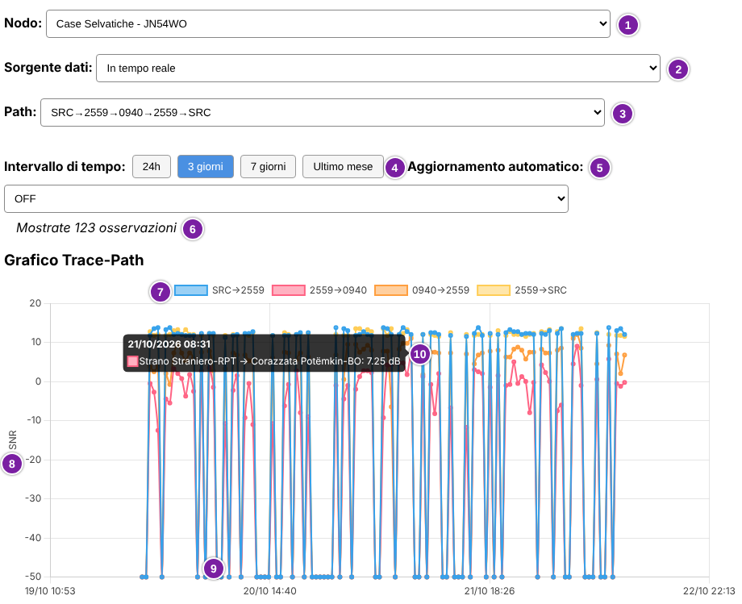
L'immagine mostra, nell'ordine indicato dai numeri:
- Solo Collettore: il selettore Nodo;
- il selettore Sorgente dati;
- il selettore Path;
- i pulsanti dell'intervallo di tempo; quello attivo è blu;
- il controllo Aggiornamento automatico;
- il numero di osservazioni disegnate;
- la legenda, con una voce per ogni tratto del path;
- l'asse verticale, che riporta l'SNR in dB; l'asse orizzontale riporta data e ora;
- un punto a -50 dB, che indica una traccia in TIMEOUT;
- la finestra che compare passando il mouse su un punto: data e ora, nomi dei due nodi del tratto e SNR.
Schermata d'esempio.
L'SNR di un tratto X→Y è quello misurato da Y quando ha ricevuto la traccia da X. Per l'ultimo tratto, verso SRC, è quello misurato da SRC. Ogni valore riguarda quella sola traccia.
Le linee hanno colori diversi solo per distinguerle. Il colore dell'SNR (rosso, arancio, verde) compare nella finestra del punto, nelle tabelle e sulla mappa del dettaglio, con le soglie indicate nella sezione 2.7. Un clic su una voce della legenda nasconde o mostra quella linea.
Una traccia in TIMEOUT è una traccia che non ha ricevuto risposta entro il tempo di attesa. Non produce nessuna misura. Il grafico la disegna comunque, a -50 dB su tutti i tratti, e le statistiche la escludono.
Nelle tabelle, passando il mouse su un hash compare il nome del repeater. Se più repeater iniziano con quell'hash compare «Ambiguo»; se nessuno, «Sconosciuto». Lo stesso vale per i nomi nella finestra del punto.
3.3 Statistiche
La tabella Statistiche riassume l'SNR di ogni tratto, con una riga per tratto. Usa tutte le tracce riuscite della sorgente dati scelta, non solo quelle dell'intervallo del grafico. Le tracce in TIMEOUT non sono contate.
| Elemento del path | Avg | Min | Max |
|---|---|---|---|
| SRC→2559 | 12.48 dB | 11.25 dB | 14 dB |
| 2559→0940 | -0.06 dB | -13.5 dB | 11.5 dB |
| 0940→2559 | 7.74 dB | -9.75 dB | 12.5 dB |
| 2559→SRC | 12.37 dB | 11.25 dB | 14 dB |
Dati d'esempio.
- Elemento del path: nome della colonna dei tratti. Ogni riga è un tratto, scritto X→Y. In questa guida un elemento è un nodo del path, cioè SRC o un repeater.
- Avg: media degli SNR misurati su quel tratto.
- Min e Max: il valore più basso e il più alto misurati su quel tratto.
Le intestazioni Avg, Min e Max non sono tradotte. I valori sono colorati come l'SNR nelle tabelle. Senza dati compare «Nessun dato statistico disponibile.».
3.4 Trace-Path pianificati
La tabella Trace-Path pianificati ha una riga per ogni osservazione del path scelto. Comprende tutte le osservazioni della sorgente dati, anche quelle fuori dall'intervallo del grafico. Le righe sono in ordine di data: la più vecchia è in alto e la più recente in fondo. La tabella ha un riquadro a scorrimento e l'intestazione resta visibile mentre si scorre.
| Data e ora | Stato | SRC→2559 | 2559→0940 | 0940→2559 | 2559→SRC |
|---|---|---|---|---|---|
| 22/10/2026 09:01 | TIMEOUT | TIMEOUT | TIMEOUT | TIMEOUT | TIMEOUT |
| 22/10/2026 09:31 | OK | 13.75 dB | 5.75 dB | 9.25 dB | 12 dB |
| 22/10/2026 10:01 | TIMEOUT | TIMEOUT | TIMEOUT | TIMEOUT | TIMEOUT |
| 22/10/2026 10:31 | OK | 13 dB | -0.5 dB | 7 dB | 11.75 dB |
| 22/10/2026 11:01 | OK | 13.5 dB | -1.25 dB | 2 dB | 11.75 dB |
| 22/10/2026 11:31 | OK | 12 dB | -0.25 dB | 6.75 dB | 11.5 dB |
Dati d'esempio.
- Data e ora: quando è stata eseguita la traccia. È un link: un clic apre il dettaglio della traccia (sezione 3.5).
- Stato: OK in verde se la traccia ha avuto risposta, TIMEOUT in rosso se non l'ha avuta.
- Una colonna per ogni tratto del path, con l'SNR di quel tratto in quella traccia. Il colore indica la qualità: rosso sotto 0 dB, arancio da 0 a meno di 4.6 dB, verde da 4.6 dB in su. In una traccia in TIMEOUT ogni tratto riporta «TIMEOUT».
Senza osservazioni compare «Nessun dato di traccia disponibile per questo path.».
3.5 Dettaglio di una traccia
Un clic su Data e ora apre il dettaglio di quella traccia. Il link ← Torna a Tracce riporta alla scheda. Il titolo riporta il path e la data e ora della traccia. La pagina vale anche per un mese archiviato e non si aggiorna da sola.
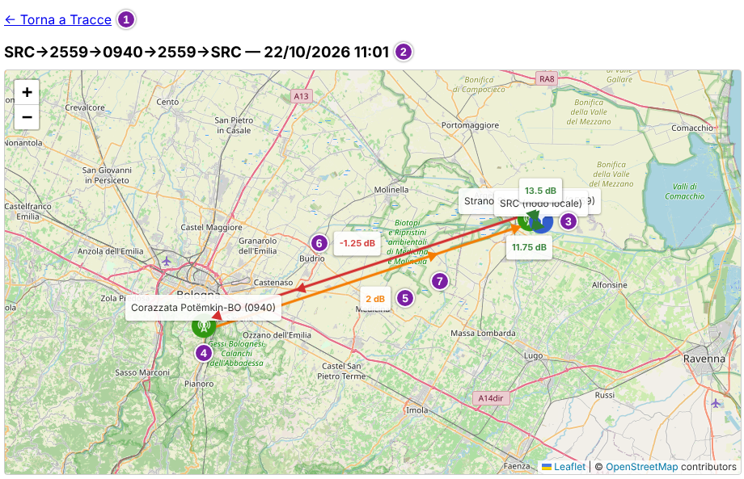
La mappa mostra, nell'ordine indicato dai numeri:
- il link ← Torna a Tracce;
- il titolo, con il path e la data e ora della traccia;
- SRC, con il marcatore blu e l'etichetta «SRC (nodo locale)»;
- un repeater del path, con il marcatore verde; l'etichetta riporta il nome e, tra parentesi, l'hash;
- il tratto 0940→2559, in arancio perché l'SNR è 2 dB; l'etichetta riporta il valore;
- il tratto 2559→0940, in rosso perché l'SNR è -1.25 dB; è disegnato accanto al precedente, perché il path contiene entrambe le direzioni;
- una freccia, che indica la direzione del tratto.
Schermata d'esempio. Corrisponde alla riga delle 11:01 della tabella precedente. SRC e il repeater 2559 sono vicini, perciò i loro marcatori e le loro etichette si sovrappongono in alto a destra.
Vicino a SRC compaiono anche le etichette verdi «13.5 dB» e «11.75 dB». Sono gli SNR dei tratti SRC→2559 e 2559→SRC, verdi perché da 4.6 dB in su.
Ogni tratto del path è un segmento con una freccia e un'etichetta con il suo SNR, colorato come nelle tabelle. Il valore è lo stesso della riga cliccata. I tratti di andata e ritorno tra gli stessi due nodi sono disegnati uno accanto all'altro. Una traccia in TIMEOUT ha i segmenti rossi, tratteggiati, con l'etichetta «TIMEOUT».
I nodi sono disegnati con le posizioni attuali, anche per un mese archiviato. La posizione di SRC è quella del companion. Un nodo senza posizione utilizzabile non viene disegnato, e non lo sono i segmenti che lo toccano: mancano le coordinate, sono (0, 0) oppure fuori intervallo.
Sopra la mappa compaiono gli avvisi che spiegano cosa manca. Possono riguardare la posizione di SRC, la posizione di un repeater, un hash ambiguo o un repeater non trovato. Per una traccia in TIMEOUT un avviso ricorda che il path disegnato è quello configurato e non necessariamente quello percorso dai pacchetti. Se nessun nodo ha una posizione, un avviso dice che la mappa non si può mostrare.
I pulsanti + e − in alto a sinistra cambiano l'ingrandimento. Le etichette di punti vicini possono sovrapporsi: ingrandire la mappa le separa. Lo sfondo è la cartina OpenStreetMap, come nella sezione 4.3.
4. Scheda «Nodi»
La scheda Nodi mostra ciò che il Nodo sa del proprio device e della rete radio che lo circonda. Contiene lo stato del device, l'elenco dei nodi conosciuti e i messaggi Sonar.
4.1 Stato del device
La sezione Stato del device riporta i dati del companion collegato al Nodo, cioè SRC. Non riguarda gli altri nodi della rete.
Nome e connessione
In cima alla scheda compare il nome del companion, seguito da un indicatore di connessione. Il nome vale per tutta la scheda: lo stato del device e l'elenco dei nodi si riferiscono a quel companion. Se il nome non è disponibile compare «(sconosciuto)».
L'indicatore dice se il companion è collegato a trace-mon. Passando il mouse compaiono l'ora dell'ultimo controllo e, se il companion è disconnesso, da quando.
- Connesso (✓): il companion è collegato a trace-mon.
- Disconnesso (✗): il companion non è collegato.
- Sconosciuto (?): l'ultimo controllo risale a più di 30 minuti fa, quindi lo stato non è affidabile. Può dipendere dal Nodo fermo oppure, nel Collettore, da dati non recenti.
Solo Collettore: il nome e l'indicatore sono quelli del Nodo scelto con il selettore Nodo.
Tabella
La tabella riporta i valori letti dal companion. Il Nodo non li legge in tempo reale: li aggiorna a intervalli regolari, con la configurazione predefinita ogni ora. La riga Updated indica quanto tempo fa è avvenuta l'ultima lettura.
I nomi delle righe sono quelli del firmware e non vengono tradotti. Passando il mouse su un nome compare una breve spiegazione.
| Updated | 12m fa |
|---|---|
| Battery | 4.28V |
| Uptime | 1d 18h 4m |
| Noise Floor | -112 dBm |
| Last RSSI | -33 dBm |
| Last SNR | 12 dB |
| TX Queue | 0 / 16 |
| Error Flags (bitmask) | 0 |
| Packets Received | 18226 pkts |
| Packets Sent | 451 pkts |
| Sent (Flood | Direct) | 46 pkts | 405 pkts |
| Received (Flood | Direct) | 17717 pkts | 498 pkts |
| Receive Errors (CRC Fail) | 423 pkts |
| CRC Error Rate (RX) | 2.27% |
| Airtime (TX | RX) | 0d 0h 3m | 0d 4h 41m |
| Airtime % (mesh, TX+RX/Uptime) | 11.30% |
| TX Duty Cycle (observed, TX/Uptime) | 0.16% |
| Radio settings (Freq | SF | BW | CR) | 869.618 MHz | 8 | 62.5 kHz | 8 |
| Telemetry - Voltage (ch 1) | 4.27 V |
| Telemetry - Temperature (ch 1) | 40 °C |
Dati d'esempio. La tabella è abbreviata: mancano Firmware Version e Hardware.
- Updated: tempo trascorso dall'ultima lettura dei dati del companion.
- Battery: tensione della batteria, in volt.
- Uptime: tempo trascorso dall'ultimo avvio del device, in giorni, ore e minuti.
- Noise Floor: rumore di fondo del canale radio misurato dal chip, in dBm. Più il valore è negativo, più il canale è silenzioso; un aumento che dura segnala interferenze o un canale affollato.
- Last RSSI e Last SNR: potenza del segnale, in dBm, e rapporto segnale/rumore, in dB, dell'ultimo pacchetto ricevuto dal companion. Riguardano quel solo pacchetto, di qualunque nodo, e non sono medie.
- TX Queue: pacchetti in coda in attesa di trasmissione, sul totale della coda, che è di 16.
- Error Flags (bitmask): numero in cui ogni bit segnala un evento a basso livello della radio, come coda piena o timeout. Non è un conteggio di pacchetti e non coincide con Receive Errors (CRC Fail).
- Packets Received e Packets Sent: pacchetti ricevuti e trasmessi dall'ultimo avvio. Un pacchetto flood è rilanciato da tutti i repeater che lo sentono, uno direct segue un path indicato. Tra i ricevuti contano solo quelli che hanno superato il controllo CRC, che verifica che il contenuto non sia alterato.
- Sent (Flood | Direct) e Received (Flood | Direct): gli stessi conteggi divisi per modalità. Compare prima il valore flood, poi il valore direct. La somma dei due valori ricevuti può differire dal totale di Packets Received.
- Receive Errors (CRC Fail): pacchetti arrivati al chip radio il cui contenuto ha fallito il controllo CRC. Possono dipendere da collisioni, segnale debole, interferenze o pacchetti troncati.
- CRC Error Rate (RX): percentuale di pacchetti arrivati al chip radio persi per errore CRC. Senza pacchetti ricevuti compare «n/d».
- Airtime (TX | RX): tempo passato dall'avvio a trasmettere e a ricevere pacchetti, in giorni, ore e minuti. Non è il tempo totale con la radio accesa.
- Airtime % (mesh, TX+RX/Uptime): percentuale dell'uptime in cui il canale è stato occupato da traffico, proprio e altrui. Indica quanto è affollata la rete intorno al companion.
- TX Duty Cycle (observed, TX/Uptime): percentuale dell'uptime passata a trasmettere. Conta solo la trasmissione, a differenza di Airtime % (mesh, TX+RX/Uptime).
- Firmware Version e Hardware: versione e build del firmware in esecuzione sul companion e modello della scheda.
- Radio settings (Freq | SF | BW | CR): parametri radio LoRa: frequenza in MHz, spreading factor, larghezza di banda in kHz e coding rate. Il coding rate è mostrato come valore grezzo da 5 a 8: il valore standard si ottiene sottraendo 4, quindi 8 corrisponde a 4/8.
- Telemetry: una riga per ogni misura di telemetria riportata dal companion, nel formato «Telemetry - Tipo (ch N)», dove N è il canale. Il valore ha l'unità del tipo: V, °C, m, hPa o %. Se non c'è nessuna misura compare una sola riga con «n/d».
Se la tabella non si carica compare «Errore nel caricamento dello stato del device.». Se non ci sono dati compare «Nessun dato sullo stato del device disponibile.».
4.2 Nodi conosciuti
La sezione Nodi conosciuti elenca i nodi MeshCore di cui il Nodo ha memoria. Sono i nodi di cui ha ricevuto un advert e quelli presenti tra i contatti del companion. Un advert è il messaggio con cui un nodo annuncia la propria presenza.
Per ogni nodo la tabella mostra il path dell'ultimo advert ricevuto. Il path è la sequenza di repeater attraversati dall'advert per arrivare a SRC, il companion collegato al Nodo. Ogni repeater è indicato dal suo hash, cioè i primi byte della sua chiave pubblica.
Il titolo della sezione riporta quanti nodi sono elencati e come si dividono per tipo: chat (i companion), repeater e room server. I numeri seguono i filtri: cambiano quando ne viene applicato uno.
Solo Collettore: l'elenco riguarda il Nodo scelto con il selettore Nodo in cima alla pagina. Cambiando Nodo, la tabella si ricarica.
Periodo
Il selettore Periodo sceglie quali dati mostrare. In tempo reale è la situazione corrente. Gli altri elementi sono i mesi già archiviati, indicati con il nome del mese e l'anno.
Con un mese archiviato compaiono solo i nodi di cui in quel mese è stato ricevuto almeno un advert. Nome, tipo e posizione sono comunque quelli attuali.
In tempo reale la tabella si aggiorna da sola ogni 5 minuti. Un mese archiviato non cambia, quindi non viene aggiornato.
Filtri
I filtri restringono l'elenco già caricato. Le scelte restano impostate anche dopo la chiusura della pagina, ma solo nel browser in cui sono state fatte. Sono di due gruppi: lo schema mostra come si combinano.
Tre filtri servono a cercare. Se ne vengono compilati più d'uno, un nodo compare quando ne rispetta almeno uno.
- Nome / Chiave pubblica: testo contenuto nel nome o nella chiave pubblica del nodo. Maiuscole e minuscole non contano.
- Path contiene: sequenza di caratteri esadecimali cercata nel path. Si scrive senza «>» e senza spazi, con gli hash di seguito. Per esempio 0d28 trova i nodi il cui path contiene quella sequenza. La ricerca non distingue dove finisce un hash e inizia il successivo: nel path d7ac > 8a19 anche ac8a trova il nodo.
- Tipo: Tutti, chat, repeater oppure room server.
Tipo si somma agli altri due e non li restringe. Con Tipo su repeater e il testo Rasa in Nome / Chiave pubblica compaiono tutti i repeater e anche i nodi di altro tipo con Rasa nel nome.
Gli altri cinque filtri restringono il risultato. Ogni filtro attivo deve essere rispettato, in aggiunta ai filtri di ricerca.
- Lunghezza path: nodi il cui path usa hash di 1, 2 o 3 byte per repeater, cioè 2, 4 o 6 caratteri esadecimali.
- Numero massimo di hop: nodi il cui ultimo advert ha attraversato al massimo quel numero di hop. Un hop è un repeater attraversato. I nodi non osservati sono esclusi. Con una Lunghezza path scelta, passando il mouse sull'etichetta compare il numero massimo di hop possibile.
- Distanza da SRC: nodi entro 1, 5, 10, 50 o 100 km in linea d'aria da SRC. Con Personalizzata compare un campo in cui scrivere i chilometri. I nodi senza posizione utilizzabile sono esclusi. Il filtro è disattivato se la posizione di SRC non è nota.
- Solo non osservati: nodi di cui non è stato ricevuto nessun advert nel periodo in tempo reale. La colonna Path li indica con «non osservato».
- Solo advert futuri: nodi la cui Ora Advert è successiva all'ora attuale. Di solito indica un nodo con l'orologio non regolato.
Gli ultimi due filtri sono disponibili solo con il periodo In tempo reale. Con un mese archiviato risultano disattivati e passando il mouse sull'etichetta ne compare il motivo.
I campi Nome / Chiave pubblica, Path contiene e Numero massimo di hop hanno un pulsante Cancella che svuota il campo. Se nessun nodo rispetta i filtri compare il messaggio «Nessun nodo corrisponde ai filtri attuali.».
Tabella
La tabella ha una riga per nodo. I nodi ricevuti più di recente stanno in alto; seguono quelli non osservati. L'ordine segue l'ora di ricezione dell'ultimo advert, che la tabella non mostra. La colonna Ora Advert riporta invece l'ora scritta dal nodo, perciò le date possono non essere in ordine.
| Nome | Tipo | Ora Advert | Path |
|---|---|---|---|
| IK2XYP-RPT | repeater | 22/10/2026 08:46 | DIRECT (0 hop) |
| Rasa di Varese | repeater | 21/10/2026 17:57 | 0d28 |
| Nodo di esempio | chat | 20/10/2026 21:43 | d7ac > 8a19 > 14ca > b3de |
| Altro nodo | chat | 15/10/2026 09:12 | non osservato |
Dati d'esempio.
- Nome: nome del nodo. È un link che apre il dettaglio del nodo (sezione 4.3).
- Tipo: chat, repeater o room server.
- Ora Advert: data e ora scritte dal nodo nel proprio advert, secondo il suo orologio. Non è l'ora di ricezione, perciò può essere sbagliata se l'orologio del nodo non è regolato. Se il nodo non ha nessuna ora compare «mai».
- Path: gli hash dei repeater attraversati dall'ultimo advert
ricevuto, separati da «>». Il primo è il più vicino al nodo che ha
trasmesso, l'ultimo il più vicino a SRC.
- Passando il mouse su un hash compare il nome del repeater. Se più repeater iniziano con quell'hash compare «Ambiguo»; se nessuno, «Sconosciuto».
- DIRECT (0 hop) indica un advert ricevuto senza repeater.
- non osservato indica un nodo di cui non è stato ricevuto nessun advert nel periodo.
Il periodo in tempo reale è il mese in corso (sezione 2.3): la rotazione mensile archivia i dati del mese precedente. Per questo un nodo può risultare «non osservato» appena inizia un nuovo mese.
Con un mese archiviato senza nodi compare «Nessun nodo osservato nel periodo selezionato per questo nodo.».
Solo Collettore: per un Nodo che non ha ancora inviato dati
compare «Nessun dato disponibile per questo nodo — verifica che
l'aggiornamento sia stato applicato.». Qui aggiornamento indica
l'invio dei dati dal Nodo al Collettore, che il Nodo esegue con il crontab
(INSTALL.md, sezione «Crontab»). Lo stesso messaggio compare
nella tabella dei messaggi Sonar con un'altra causa (sezione 4.4).
4.3 Dettaglio di un nodo
Un clic sul nome di un nodo apre la pagina di dettaglio. Il link ← Torna all'elenco riporta alla tabella. La pagina usa lo stesso Periodo scelto nell'elenco e non si aggiorna da sola.
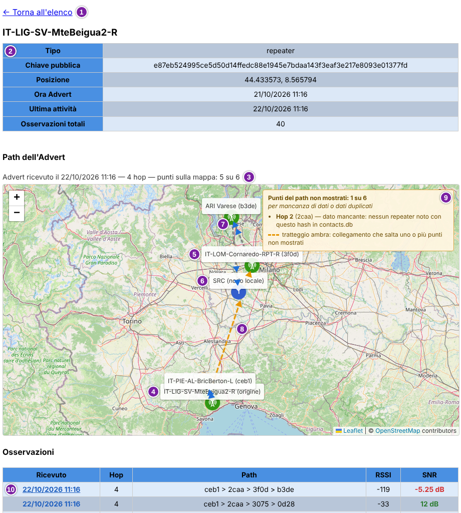
La pagina mostra, nell'ordine indicato dai numeri:
- il link ← Torna all'elenco;
- la tabella informativa del nodo, con Tipo, Chiave pubblica, Posizione, Ora Advert, Ultima attività e Osservazioni totali;
- la didascalia della mappa: data e ora di ricezione dell'advert scelto, numero di hop e quanti punti del path sono disegnati;
- l'origine, cioè il nodo di cui si guarda l'advert, con l'etichetta «(origine)»;
- un hop intermedio: l'etichetta riporta il nome del repeater e, tra parentesi, il suo hash;
- SRC, indicato come «SRC (nodo locale)», dove l'advert è stato ricevuto;
- la linea grigia punteggiata con le frecce blu, che segue il tragitto dall'origine verso SRC;
- il tratteggio ambra, un collegamento che salta un punto non mostrato;
- il riquadro Punti del path non mostrati, che elenca i punti omessi e il motivo. Il motivo nomina il database dei contatti del Nodo, cioè l'insieme dei repeater noti (sezione 2.6);
- la tabella Osservazioni, con il link nella colonna Ricevuto che disegna sulla mappa quell'advert.
Schermata d'esempio.
Tabella informativa
Posizione riporta le coordinate geografiche, cioè latitudine e longitudine. Se mancano, la cella mostra «-, -». Con coordinate (0, 0) (nodo senza GPS) o fuori intervallo compare «Non disponibile» con il motivo.
Ultima attività è l'ultimo aggiornamento del nodo registrato dal Nodo. Può essere più recente dell'ultimo advert ricevuto, perché il Nodo aggiorna periodicamente tutti i contatti. Per sapere quando il nodo è stato davvero ricevuto si usa la colonna Ricevuto.
Osservazioni totali è il numero di righe della tabella Osservazioni nel periodo scelto.
Osservazioni
La tabella Osservazioni ha una riga per ogni ricezione di un advert del nodo, dalla più recente. Lo stesso advert può comparire più volte, se è arrivato per strade diverse: le righe non vengono unificate. Solo Collettore: nell'analisi Propagazione della scheda Analisi una ricezione si chiama copia (sezione 6.2).
| Ricevuto | Hop | Path | RSSI | SNR |
|---|---|---|---|---|
| 22/10/2026 11:16 | 4 | ceb1 > 2caa > 3f0d > b3de | -119 | -5.25 dB |
| 22/10/2026 11:16 | 4 | ceb1 > 2caa > 3075 > 0d28 | -33 | 12 dB |
Dati d'esempio.
- Ricevuto: data e ora di ricezione. È un link: un clic disegna sulla mappa il path di quella riga.
- Hop: numero di repeater attraversati; 0 significa advert ricevuto senza repeater.
- Path: gli hash dei repeater, come nell'elenco dei nodi.
- RSSI: potenza del segnale in dBm, misurata sull'ultimo passaggio del path.
- SNR: rapporto segnale/rumore in dB, misurato sull'ultimo passaggio del path. Il colore indica la qualità: rosso sotto 0 dB, arancio da 0 a meno di 4.6 dB, verde da 4.6 dB in su.
RSSI e SNR riguardano solo l'ultimo passaggio del path. Sono i valori con cui SRC, il companion collegato al Nodo, ha ricevuto il pacchetto dall'ultimo repeater della catena. Nella prima riga dell'esempio è b3de, nella seconda 0d28. Con 0 hop sono i valori della ricezione dal nodo che ha trasmesso, senza repeater.
Il path non riporta RSSI e SNR dei passaggi intermedi, da un repeater al successivo. Solo la scheda Tracce mostra l'SNR di ogni passaggio di una traccia con più hop.
Path dell'Advert
La sezione Path dell'Advert contiene la mappa. Prima di un clic su Ricevuto la mappa non compare e la pagina suggerisce di scegliere una riga. Dopo il clic la mappa mostra il percorso dell'advert: origine, repeater attraversati e SRC.
I punti sono disegnati con le posizioni attuali dei nodi, anche per un mese archiviato. Un punto senza posizione utilizzabile non viene disegnato: mancano le coordinate, sono (0, 0) oppure fuori intervallo. Anche un hash ambiguo, cioè condiviso da più repeater, non viene disegnato.
Per ogni punto omesso il riquadro Punti del path non mostrati riporta la posizione nel path, l'hash e il motivo. I motivi sono due.
- dato mancante: nessun repeater noto ha quell'hash, oppure manca la posizione.
- dato duplicato: più repeater hanno quell'hash.
Il collegamento che salta un punto omesso è tratteggiato in ambra. Il tragitto completo comprende l'origine, tutti gli hop e SRC. Con 0 hop restano solo origine e SRC.
Le icone distinguono i tipi di nodo. I nodi chat usano la stessa icona di SRC; repeater e room server ne hanno una propria. I pulsanti + e − in alto a sinistra cambiano l'ingrandimento. Le etichette di punti vicini possono sovrapporsi: ingrandire la mappa le separa.
Lo sfondo è una cartina OpenStreetMap caricata dal browser. Serve una connessione a Internet sul computer di chi guarda la pagina.
4.4 Messaggi Sonar
La sezione Messaggi Sonar sta sotto l'elenco dei nodi conosciuti. Un messaggio Sonar è un messaggio breve con un numero progressivo, che i Nodi trasmettono a intervalli regolari su un canale pubblico dedicato. Il Nodo registra i messaggi che riceve, con il path seguito, l'RSSI e l'SNR.
L'elenco ha una riga per mittente, non per messaggio. Il titolo riporta il numero di mittenti; con il filtro acceso indica quanti sono mostrati sul totale. I messaggi trasmessi dal Nodo stesso non compaiono.
La sezione usa lo stesso Periodo dei nodi conosciuti (sezione 4.2). In tempo reale mostra i messaggi del mese in corso e si aggiorna da sola ogni 5 minuti. Con un mese archiviato mostra quelli ricevuti in quel mese.
Solo Collettore: la casella Solo mittenti nodi trace-mon mostra solo i mittenti che sono Nodi trace-mon. Per impostazione predefinita è spenta, quindi si vede tutto ciò che arriva sul canale. La scelta resta nel browser.
| Mittente | Ricevuto | Path |
|---|---|---|
| Nodo di esempio 1a2b3c4d | 22/10/2026 11:16 | ceb1 > 2caa > b3de |
| (sconosciuto) 9f8e7d6c | 22/10/2026 09:02 | DIRECT (0 hop) |
| Altro nodo 5e4f3a2b | 21/10/2026 23:47 | 0d28 |
Dati d'esempio.
- Mittente: nome del nodo che ha trasmesso, seguito dal suo prefisso, cioè i primi 8 caratteri della chiave pubblica. Il nome è un link che apre il dettaglio del mittente. Se il nodo non è noto compare «(sconosciuto)»; se più nodi hanno quel prefisso, «(ambiguo)».
- Ricevuto: data e ora in cui è arrivata la prima copia dell'ultimo messaggio del mittente. Non è un link.
- Path: path di quella copia, scritto come nei nodi conosciuti. Se il path non è stato registrato ma il numero di hop è noto, compare per esempio «3 hop (path non registrato)».
Lo stesso messaggio può arrivare più volte, per path diversi: ogni ricezione è una copia. I mittenti sono ordinati dall'arrivo dell'ultimo messaggio, il più recente in alto. Il nome e la posizione di un mittente sono sempre quelli attuali, anche per un mese archiviato.
Senza messaggi compare «Nessun messaggio Sonar ricevuto.». Con un mese senza archivio compare «Nessun messaggio Sonar archiviato per il periodo selezionato.». Con il filtro acceso e nessun mittente trace-mon compare «Nessun messaggio da nodi trace-mon.».
Solo Collettore: compare «Nessun dato disponibile per questo nodo — verifica che l'aggiornamento sia stato applicato.» quando i dati del Nodo non contengono ancora i messaggi Sonar. Le cause possibili sono due. Il Nodo non ha ancora inviato i dati (sezione 4.2), oppure il suo software non è stato aggiornato alla versione che registra i messaggi Sonar. Il messaggio dice aggiornamento in entrambi i casi.
Nel secondo caso, aggiornare il software del Nodo spetta a chi gestisce il Nodo.
Dettaglio di un mittente
Un clic sul nome di un mittente apre la sua pagina di dettaglio, come per i nodi conosciuti. Il link ← Torna all'elenco riporta alla scheda Nodi, già posizionata sulla sezione Messaggi Sonar. La pagina usa lo stesso Periodo dell'elenco e non si aggiorna da sola: i messaggi arrivati dopo l'apertura si vedono tornando all'elenco.
Solo Collettore: cambiando Nodo con il dettaglio aperto si torna all'elenco del Nodo scelto.
In cima alla pagina c'è il nome del mittente, o il suo prefisso se il nome non è noto. Seguono tre parti: la tabella informativa, la mappa del path e la tabella dei messaggi.
La tabella informativa ha le righe Tipo, Chiave pubblica (intera) e Posizione, descritte nella sezione 4.3, più due righe proprie. Ultimo messaggio è la data e l'ora della prima copia dell'ultimo messaggio. Ricezioni totali è il numero di copie ricevute dal mittente nel periodo, non il numero di messaggi. Per un mittente sconosciuto o ambiguo restano solo il prefisso, con l'indicazione, e le due righe proprie.
La sezione Path del messaggio contiene la mappa, che funziona come quella di Path dell'Advert (sezione 4.3). Un clic su un valore della colonna Ricevuto della tabella Messaggi disegna sulla mappa il path di quella copia.
La tabella Messaggi ha una riga per ogni copia ricevuta dal mittente, dalla più recente.
| Msg | Ricevuto | Hop | Path | RSSI | SNR |
|---|---|---|---|---|---|
| #42 | 22/10/2026 11:16 | 3 | ceb1 > 2caa > b3de | -105 | 2.5 dB |
| #42 | 22/10/2026 11:16 | 4 | ceb1 > 2caa > 3075 > 0d28 | -33 | 12 dB |
| #41 | 22/10/2026 05:16 | 0 | DIRECT (0 hop) | -60 | 9 dB |
Dati d'esempio.
- Msg: numero progressivo del messaggio, preceduto da «#». Le copie dello stesso messaggio hanno lo stesso numero e stanno in righe vicine. Senza numero compare «-».
- Ricevuto: data e ora di ricezione della copia. È un link che disegna sulla mappa il path di quella riga.
- Hop: numero di repeater attraversati; 0 significa messaggio ricevuto senza repeater.
- Path: gli hash dei repeater, come nell'elenco.
- RSSI e SNR: potenza e rapporto segnale/rumore della copia, misurati sull'ultimo passaggio del path. L'SNR è colorato come nella sezione 4.3.
RSSI e SNR riguardano solo l'ultimo passaggio del path. Sono i valori con cui SRC, il companion collegato al Nodo, ha ricevuto quella copia dall'ultimo repeater della catena. Ogni copia ha quindi i propri valori. Il path non riporta RSSI e SNR dei passaggi intermedi.
5. Scheda «Repeater»
La scheda Repeater mostra i dati che il Nodo legge da un repeater. A differenza della scheda Nodi, qui i dati sono quelli che il repeater stesso riporta: stato, telemetria, configurazione, regioni e nodi che sente direttamente.
Il Nodo interroga i repeater indicati in configurazione a intervalli
regolari. Sono i repeater gestiti da trace-mon. Si scelgono con
config.sh (sezione 8.9; INSTALL.md, sezione
«Modificare la configurazione in seguito (config.sh)»).
Con la cadenza predefinita (sezione 1.4) l'interrogazione avviene ogni 2 ore. La scheda mostra l'ultima interrogazione riuscita, non una lettura in tempo reale: la riga Queried At dice quando è avvenuta.
Se un'interrogazione non riesce, per esempio per un permesso mancante, non nasce una nuova lettura. La scheda continua a mostrare l'ultima disponibile, con la sua età.
Il selettore Repeater elenca i repeater di cui il Nodo ha dati. Il browser ricorda la scelta per ogni Nodo. Sotto il selettore compare il nome del repeater; se non è noto compare «(sconosciuto)».
Solo Collettore: il selettore Nodo sceglie di quale Nodo si vedono i repeater.
Per interrogare un repeater, il companion collegato al Nodo deve avere il
permesso admin nella lista di accesso (ACL) di quel repeater. Senza
questo permesso la scheda funziona solo in parte: per esempio la
versione del firmware e l'hardware non si leggono. Come ottenerlo è
spiegato in INSTALL.md, sezione «Permessi ACL sul repeater
(per il servizio Repeaters)».
La scheda si aggiorna da sola ogni 5 minuti, finché è visibile. Ricarica il repeater scelto e riporta il Periodo dei vicini su In tempo reale: chi guarda un mese archiviato torna ai dati correnti.
5.1 Stato
La tabella Stato riporta le misure e i contatori del repeater. I nomi delle righe sono quelli del firmware e non vengono tradotti. Passando il mouse su un nome compare una breve spiegazione.
| Queried At | 22/10/2026 10:05 |
|---|---|
| Battery | 4.23V |
| Uptime | 5d 3h 15m |
| Noise Floor | -100 dBm |
| Last RSSI | -52 dBm |
| Last SNR | 12.5 dB |
| TX Queue Length | 0 |
| Packets Received | 98289 pkts |
| Packets Sent | 25462 pkts |
| Sent (Flood | Direct) | 24037 pkts | 1425 pkts |
| Received (Flood | Direct) | 94785 pkts | 3440 pkts |
| Duplicates (Direct | Flood) | 0 pkts | 2724 pkts |
| Receive Errors (CRC Fail) | 19857 pkts |
| CRC Error Rate (RX) | 16.81% |
| Full Events | 2 |
| Airtime (TX | RX) | 0d 6h 32m | 1d 0h 31m |
| Airtime % (mesh, TX+RX/Uptime) | 25.21% |
| TX Duty Cycle (observed, TX/Uptime) | 5.31% |
| Clock Skew | sincronizzato |
Dati d'esempio.
- Queried At: data e ora dell'ultima interrogazione riuscita.
- Battery: tensione della batteria, in volt.
- Uptime: tempo trascorso dall'ultimo avvio del repeater, in giorni, ore e minuti.
- Noise Floor: rumore di fondo del canale radio, in dBm. Più il valore è negativo, più il canale è silenzioso.
- Last RSSI e Last SNR: potenza del segnale, in dBm, e rapporto segnale/rumore, in dB, dell'ultimo pacchetto ricevuto dal repeater. Riguardano quel solo pacchetto, di qualunque nodo, e non sono medie.
- TX Queue Length: pacchetti in coda sul repeater in attesa di trasmissione.
- Packets Received e Packets Sent: pacchetti ricevuti e trasmessi dall'ultimo avvio. Tra i ricevuti contano solo quelli che hanno superato il controllo CRC (sezione 4.1).
- Sent (Flood | Direct) e Received (Flood | Direct): gli stessi conteggi divisi per modalità. Compare prima il valore flood, poi il valore direct. La somma dei due valori ricevuti può differire dal totale di Packets Received.
- Duplicates (Direct | Flood): pacchetti ricevuti correttamente ma già visti in precedenza. Non sono un errore radio. L'ordine è inverso rispetto alle righe precedenti: prima direct, poi flood.
- Receive Errors (CRC Fail): pacchetti arrivati al chip radio il cui contenuto ha fallito il controllo CRC. Non contano come duplicati.
- CRC Error Rate (RX): percentuale di pacchetti arrivati al chip radio persi per errore CRC. Senza pacchetti ricevuti compare «n/d».
- Full Events: quante volte la coda di trasmissione era piena e un pacchetto non ha potuto essere accodato. Segnala saturazione sotto carico.
- Airtime (TX | RX): tempo passato dall'avvio a trasmettere e a ricevere pacchetti, in giorni, ore e minuti.
- Airtime % (mesh, TX+RX/Uptime): percentuale dell'uptime in cui il canale è stato occupato da traffico, proprio e altrui. Indica quanto è congestionata la rete attorno al repeater.
- TX Duty Cycle (observed, TX/Uptime): percentuale dell'uptime passata a trasmettere. Si confronta con Duty Cycle della tabella Configurazione (sezione 5.3), non con Airtime %.
- Clock Skew: differenza tra l'orologio del repeater e quello del Nodo. Con meno di 60 secondi, in più o in meno, compare «sincronizzato». Altrimenti compaiono il segno e la durata in giorni, ore e minuti, per esempio +0d 2h 15m. Il segno + indica l'orologio del repeater avanti, il segno - indietro.
Senza lettura compare «Nessun dato di stato disponibile.»; la riga Clock Skew resta, con «n/d» se manca anche quella.
5.2 Telemetria
La tabella Telemetria riporta le misure dei sensori del repeater, una riga per misura.
| Canale | Tipo | Valore |
|---|---|---|
| 1 | Temperature | 27 °C |
| 1 | Voltage | 4.2 V |
Dati d'esempio.
- Canale: il numero del canale del sensore sul repeater.
- Tipo: la grandezza misurata, con il nome riportato dal repeater.
- Valore: la misura, con l'unità per i tipi noti: V, °C, m, hPa e %. Per gli altri tipi compare il numero senza unità.
Senza misure compare «Nessun dato di telemetria disponibile.».
Se l'ultima interrogazione non ha ricevuto la telemetria, la tabella riporta quella dell'ultima interrogazione che l'ha ricevuta. Sopra la tabella compare allora la riga «Dati dell'ultima interrogazione che li ha ricevuti», con data e ora.
5.3 Configurazione
La tabella Configurazione riporta le impostazioni del repeater. Come per Stato, i nomi delle righe non vengono tradotti e compare una spiegazione passando il mouse. I dati richiedono il permesso admin nell'ACL del repeater.
| Path Hash Mode | 1 |
|---|---|
| TX Delay (Flood) | 0.5 |
| TX Delay (Direct) | 0.2 |
| RX Delay | 0 |
| Flood Max Hops | 64 |
| Flood Max Hops (Unscoped) | 20 |
| Flood Max Hops (Advert) | 64 |
| Default Region | default scope is it |
| Duty Cycle | 10% |
Dati d'esempio. La tabella è abbreviata: mancano Firmware Version e Hardware.
- Firmware Version: versione e build del firmware in esecuzione sul repeater.
- Hardware: nome o modello dell'hardware del repeater.
- Path Hash Mode: dimensione in byte dell'hash usato nei path. 0 significa 1 byte, 1 significa 2 byte, 2 significa 3 byte.
- TX Delay (Flood): fattore che scala il ritardo casuale prima di ritrasmettere un pacchetto flood. Evita che più repeater vicini ritrasmettano insieme e collidano. Con 0 il ritardo è disattivato.
- TX Delay (Direct): lo stesso, per i pacchetti diretti verso un hop specifico.
- RX Delay: funzione sperimentale. I pacchetti flood ricevuti con segnale debole sono trattenuti brevemente, per dare la precedenza ai repeater che li hanno ricevuti con segnale forte.
- Flood Max Hops: limite di hop dei pacchetti flood. Oltre quel numero di hop il pacchetto è scartato.
- Flood Max Hops (Unscoped): lo stesso limite, per i pacchetti flood senza regione.
- Flood Max Hops (Advert): il limite di hop dei soli advert in flood.
- Default Region: regione che il repeater usa quando un pacchetto non ne indica una.
- Duty Cycle: limite di trasmissione che il repeater si impone, in percentuale. Dopo ogni trasmissione resta in silenzio per un tempo proporzionale. Riguarda solo la trasmissione.
Senza dati compare «Nessun dato di configurazione disponibile.». Solo Collettore: i limiti di hop di questa tabella sono quelli che l'analisi Propagazione considera per i repeater gestiti da trace-mon (sezione 6.8).
5.4 Regione
La sezione Regione mostra come testo l'elenco delle regioni supportate dal repeater, così come lo restituisce, senza elaborarlo. Senza dati compare «Nessun dato di regione disponibile.».
*,europe,it,it-lom,it-lom-pv,ch-it
Dati d'esempio.
5.5 Vicini
La sezione Vicini elenca i nodi che il repeater sente direttamente, cioè senza altri repeater di mezzo. Il titolo riporta il numero di vicini, per esempio «Vicini - 17». Un repeater ricorda i vicini sentiti in precedenza: l'elenco comprende anche nodi sentiti ore fa, e un riavvio del repeater lo svuota.
| Nome | Prefisso | SNR | Ultima ricezione |
|---|---|---|---|
| IK2XYP-Test | 076b68b2 | 12.25 | 7m fa |
| It-Lom-Sighignola-D | 973e7ae3 | -4.5 | 16m fa |
| Nodo A,Nodo B (ambiguo) | 5a1c9e04 | 3.5 | 41m fa |
| (sconosciuto) | c04d7712 | -10.25 | 2h 14m fa |
Dati d'esempio.
- Nome: il nome del nodo con quel prefisso tra i nodi conosciuti (sezione 4.2). Se nessuno corrisponde compare «(sconosciuto)». Se corrispondono più nodi compaiono tutti i nomi, seguiti da «(ambiguo)».
- Prefisso: i primi caratteri della chiave pubblica del vicino, in esadecimale.
- SNR: rapporto segnale/rumore, in dB, con cui il repeater ha ricevuto quel vicino. È misurato dal repeater, non da SRC.
- Ultima ricezione: tempo trascorso dall'ultima ricezione di quel vicino da parte del repeater, al momento dell'interrogazione.
Senza vicini compare «Nessun dato sui vicini disponibile.».
Se l'ultima interrogazione non ha ricevuto i vicini, la tabella riporta l'elenco dell'ultima interrogazione che li ha ricevuti. Sopra la tabella compare la stessa riga «Dati dell'ultima interrogazione che li ha ricevuti», con data e ora. Ultima ricezione si riferisce a quell'interrogazione.
Un repeater che non sente più nessun vicino continua quindi a mostrare l'ultimo elenco ricevuto, con la sua data.
Il selettore Periodo sotto il titolo vale solo per i vicini. Con un mese archiviato compare un secondo selettore con le interrogazioni del mese. Ogni voce è l'elenco dei vicini ottenuto da una singola interrogazione.
Ogni voce riporta data e ora dell'interrogazione e, tra parentesi, il numero di vicini. La data è scritta come anno-mese-giorno, per esempio 2026-09-30 14:05, a differenza delle altre date della dashboard, scritte come 22/10/2026 11:16. Per impostazione predefinita è scelta l'interrogazione più recente. Stato, telemetria, configurazione e regione restano quelli correnti.
6. Scheda «Analisi»
Solo Collettore: questa scheda c'è solo nel Collettore, che raccoglie i dati di tutti i Nodi. Sul Nodo non compare.
La scheda Analisi raccoglie analisi diverse dei dati registrati. Ogni analisi ha i propri pannelli, numerati da 1. Il selettore Analisi sceglie quale mostrare.
La sezione 6.1 descrive i controlli e l'aggiornamento dei dati, comuni a tutte le analisi. Ogni analisi ha poi un proprio blocco di sezioni: una panoramica con i termini che usa e una sezione per ogni pannello.
| Analisi | A cosa serve | Si basa su | Sezioni |
|---|---|---|---|
| Propagazione: path degli advert contro path Sonar | Confronta fino a quanti hop arrivano gli advert e i messaggi Sonar. Elenca i repeater visti ritrasmettere lontano. | I path di advert e messaggi Sonar registrati dai Nodi (sezioni 4.2 e 4.4). | sezioni da 6.2 a 6.8 |
| Qualità dei path e simmetrie | Mostra quanto è buono ogni collegamento tra due repeater e quanto è equilibrato tra le due direzioni. Segnala i path che rispondono poco pur avendo un buon margine. | I risultati delle tracce eseguite dai Nodi (sezione 3). | sezioni da 6.9 a 6.16 |
6.1 Controlli e aggiornamento dei dati
I controlli stanno in cima alla scheda e valgono per tutte le analisi. Il browser ricorda la scelta del periodo, non quella dell'analisi.
- Analisi: tipo di analisi. Il selettore ha due voci, Propagazione: path degli advert contro path Sonar e Qualità dei path e simmetrie. Aprendo la scheda è scelta la prima. Cambiando analisi cambiano i pannelli sotto i controlli.
- Periodo: dati da analizzare. Il selettore ha tre tipi di
voce.
- Tutta la storia: il mese in corso e tutti i mesi archiviati. È il valore predefinito.
- La voce del mese in corso: In tempo reale (database corrente) nella Propagazione, In tempo reale (file di tracce corrente) nella Qualità.
- Una voce per ogni mese archiviato, con il nome del mese, per esempio «Settembre 2026».
Ogni analisi ha la propria lista di periodi, perché i mesi disponibili possono essere diversi. Se il periodo ricordato dal browser non esiste per l'analisi scelta, la scheda usa il valore predefinito.
Il selettore Nodo non compare in cima alla scheda. Una nota ricorda che ogni analisi combina i dati di ogni Nodo: «Tutti i nodi configurati su questo collettore.».
Aggiornamento dei dati
La scheda non ha l'aggiornamento automatico. Mostra risultati calcolati in anticipo da un calcolo pianificato, eseguito sul Collettore. Con la cadenza predefinita (sezione 1.4) il calcolo parte ogni 2 ore.
Lo stesso calcolo pianificato prepara tutte le analisi. Ogni analisi ha però il proprio esito: se una fallisce, l'altra si aggiorna comunque.
Aprendo la scheda, o cambiando analisi, il browser controlla se esistono risultati più recenti e, in quel caso, li ricarica.
Sotto i controlli una riga riporta l'orario del calcolo e da quanto tempo è stato fatto, per esempio «Calcolato 22/10/2026 10:53 (35 min fa)». Seguono l'esito dell'ultima esecuzione, la durata del calcolo e il motore usato. La riga ricorda poi che i risultati sono indicativi, con una frase che dipende dall'analisi.
- Propagazione: path degli advert contro path Sonar: «inferenza statistica dai path registrati, non una misura delle impostazioni di ciascun repeater».
- Qualità dei path e simmetrie: «indicazione ricavata dalle tracce registrate, non una misura di laboratorio».
Sotto la riga possono comparire avvisi.
- Se i risultati hanno più di 6 ore, un avviso dice quanto sono vecchi e che il calcolo pianificato potrebbe essersi fermato.
- Se l'ultima esecuzione è fallita, un avviso lo segnala. La scheda mostra i risultati dell'ultima esecuzione riuscita, con il suo orario.
- Se non esiste ancora nessun risultato compare «Nessun dato di analisi ancora disponibile.». Succede finché il calcolo pianificato non è mai stato eseguito.
- Se i dati non si caricano compare «Impossibile caricare i dati di analisi» con il motivo. Se la scheda aveva già dati, continua a mostrare quelli.
Sotto la riga compaiono i pannelli dell'analisi scelta, numerati da 1. Le sezioni seguenti li descrivono, un blocco per analisi.
6.2 Propagazione: panoramica e termini
L'analisi Propagazione: path degli advert contro path Sonar confronta il path seguito da due tipi di pacchetti: gli advert e i messaggi Sonar. Risponde a due domande. Fino a quanti hop arriva ciascun tipo di pacchetto? Quali repeater risultano ritrasmettere lontano?
Quattro termini servono subito. Sono definiti per intero più avanti, nel paragrafo Termini della propagazione di questa sezione.
- Sorgente: il nodo che ha trasmesso un pacchetto. È un ruolo, non un tipo di nodo diverso. Nelle tracce si chiama SRC (sezione 1.2).
- Tracciatore: un altro Nodo, che riceve quel pacchetto e ne registra il path con il proprio companion. È anch'esso un ruolo.
- Lontano: in una posizione del path pari o superiore a 9, contata dalla sorgente. Non è una distanza in chilometri.
- Limite di hop: il numero massimo di hop fino al quale un repeater ritrasmette un pacchetto in flood.
Il confronto è possibile perché un messaggio Sonar parte di proposito da un nodo noto, quindi origine e ora di invio sono note. Gli advert arrivano da tutti i nodi della rete. Per ogni pacchetto ricevuto l'analisi usa il path registrato da un Nodo (sezione 4.2). I messaggi Sonar sono descritti nella sezione 4.4.
I risultati sono un'inferenza dai path registrati, non una misura delle impostazioni di un repeater. Le sole impostazioni note sono i limiti di hop dei repeater gestiti da trace-mon, cioè quelli della scheda Repeater (sezione 5).
Lo schema mostra due path tra la stessa sorgente e lo stesso tracciatore. I repeater sono indicati con lettere. L'advert e il messaggio Sonar possono attraversare repeater diversi e un numero diverso di hop.
La sorgente è il Nodo che trasmette il pacchetto. Il tracciatore è un altro Nodo, che lo riceve e ne registra il path. Sono due ruoli dello stesso tipo di Nodo.
L'analisi si legge dal generale al particolare, un pannello alla volta.
- Il pannello 1 dice su quali dati poggia l'analisi: quali Nodi hanno contribuito e da quali sorgenti Sonar. Si guarda per primo (sezione 6.3).
- Il pannello 2 conta, per ogni sorgente e ogni tracciatore, i messaggi Sonar e gli advert arrivati. Un clic su una cella sceglie la coppia per il pannello 4 (sezione 6.4).
- Il pannello 3 mostra fino a quanti hop arriva ciascun tipo di pacchetto (sezione 6.5).
- Il pannello 4 elenca i path di una coppia. Per ognuno dice se un pacchetto dell'altro tipo avrebbe potuto seguirlo, secondo i limiti di hop noti. Il giudizio si fermerebbe vuol dire che un repeater con un limite noto lo avrebbe fermato (sezione 6.6).
- Il pannello 5 elenca i repeater visti ritrasmettere in una posizione lontana, con le prove raccolte (sezione 6.7).
- Il pannello 6 riporta i limiti di hop noti dei repeater gestiti da trace-mon (sezione 6.8).
L'analisi descrive i path registrati: non indica interventi da fare sui repeater.
Sono sorgenti solo i Nodi configurati con il Sonar
attivo. Gli altri mittenti Sonar stanno nel riquadro Sorgenti Sonar non
conteggiate (sezione 6.3). Il Sonar è abilitato per impostazione
predefinita su ogni Nodo e si disattiva con config.sh
(sezioni 8.10 e 8.14; INSTALL.md, sezione «Modificare la
configurazione in seguito (config.sh)»).
In tutti i pannelli di questa analisi «nessun dato» non vuol dire zero. Indica un dato che non c'è, per esempio perché un Nodo non è stato aggiornato e non registra quel tipo di informazione.
Termini della propagazione
L'analisi usa alcuni termini propri. Valgono per i pannelli da 1 a 6 e sono definiti qui.
Sorgente e tracciatore sono due ruoli di un pacchetto, non due tipi di nodo. Un Nodo trace-mon trasmette e riceve: è la sorgente dei pacchetti che trasmette ed è il tracciatore di quelli che riceve da altri. Nella matrice del pannello 2 lo stesso Nodo compare come riga, in quanto sorgente, e come colonna, in quanto tracciatore (sezione 6.4).
- Tracciatore: ruolo del Nodo che registra i path dei pacchetti ricevuti dal suo companion. I tracciatori sono tutti i Nodi configurati.
- Sorgente: ruolo del nodo che ha inviato il pacchetto. Nei pannelli da 1 a 4 le sorgenti sono i nodi che inviano messaggi Sonar e di ognuna si contano anche gli advert. Nei pannelli 5 e 6 la sorgente di un advert può essere qualsiasi nodo della rete. Nelle tracce la sorgente è il companion del Nodo, chiamato SRC (sezione 1.2).
- Trasmissione e copia: una trasmissione è un pacchetto inviato una volta. Ogni volta che un tracciatore la riceve, anche da un path diverso, registra una copia: una trasmissione può quindi dare più copie. Un messaggio Sonar è identificato dalla sorgente e dal numero progressivo; un advert dalla sorgente e dal codice del pacchetto. La tabella Osservazioni di un nodo (sezione 4.3) ha una riga per copia.
- Hop di una copia: numero di repeater attraversati. Una copia con 0 hop è diretta, cioè ricevuta senza repeater.
- Posizione nel path: numero d'ordine di un repeater nel path, contato dalla sorgente. La posizione 1 è il primo repeater dopo la sorgente. Posizione è anche il nome di due etichette con altro significato. Indica le coordinate di un nodo (sezione 4.3) e, tra i tracciatori, se le coordinate sono utilizzabili (sezione 6.3).
- Gateway: ultimo repeater del path, accanto al tracciatore. Occupa la posizione uguale al numero di hop della copia. Una copia diretta non ha gateway.
- Posizione lontana: posizione 9 o oltre, escluso il gateway. Una copia lontana ha 10 hop o più.
- Ambito (in inglese scope): indica se il pacchetto è un flood senza regione (FLOOD) oppure con regione (TC_FLOOD). TC sta per transport code, il codice che porta la regione. Unscoped, nei nomi delle impostazioni del repeater, è lo stesso di senza regione (sezione 5.3). L'analisi considera solo i pacchetti in flood.
- Limite di hop: numero massimo di hop fino al quale un repeater ritrasmette un pacchetto in flood. Le impostazioni che lo fissano sono nella sezione 5.3.
- Repeater noto: repeater, o room server, presente nell'elenco dei nodi conosciuti (sezione 2.6).
- Repeater gestito da trace-mon: repeater che il Nodo interroga, indicato in configurazione (sezione 5). Solo per questi sono noti i limiti di hop.
Lo schema mostra la differenza tra copie e trasmissioni. Due trasmissioni, ciascuna ricevuta due volte dallo stesso tracciatore, danno quattro copie. Il pannello 3 può contare tutte le copie oppure una sola copia per trasmissione (sezione 6.5).
6.3 Pannello 1: stato dei dati
Il pannello 1. Stato dei dati dice su quali dati poggia l'analisi: quali Nodi hanno contribuito, quanti pacchetti hanno registrato e da quali sorgenti Sonar. Conviene guardarlo prima degli altri.
Il pannello contiene una tabella di riepilogo e sei riquadri. Due compaiono solo quando servono.
Riepilogo
| Finestra | Tutta la storia |
|---|---|
| Intervallo dei dati | 01/09/2026 00:03 → 22/10/2026 11:16 |
| Intervallo Sonar | 02/09/2026 06:16 → 22/10/2026 11:16 |
| Periodo di confronto | da 02/09/2026 06:00 (primo messaggio Sonar in questa finestra): i pannelli 2-4 contano gli advert solo da quel momento |
| Ambito | Tutti i nodi configurati su questo collettore. |
| Posizione lontana | 9 o oltre |
Dati d'esempio.
- Finestra: il Periodo scelto.
- Intervallo dei dati: data e ora del primo e dell'ultimo dato della finestra.
- Intervallo Sonar: data e ora della prima e dell'ultima copia Sonar ricevuta da un tracciatore. Senza copie compare «nessun dato Sonar in questa finestra».
- Periodo di confronto: momento da cui i pannelli 2, 3 e 4 contano gli advert. Parte dal primo messaggio Sonar della finestra, inviato o ricevuto, così advert e Sonar si confrontano sullo stesso tempo. Può quindi cominciare prima di Intervallo Sonar. Senza messaggi Sonar compare «tutta la finestra (nessun dato Sonar con cui allinearsi)».
- Ambito: quali nodi sono combinati nell'analisi. Questa riga indica i nodi e non ha il significato di ambito della sezione 6.2.
- Posizione lontana: da quale posizione nel path un hop è considerato lontano.
I pannelli 5 e 6 usano sempre tutta la finestra.
Tracciatori
La tabella Tracciatori ha una riga per tracciatore e mostra quanto ha registrato nella finestra.
| Tracciatore | Posizione | Advert ricevuti | Intervallo advert | Messaggi Sonar ricevuti | Sonar inviati | Advert inviati (registrati) | Stato |
|---|---|---|---|---|---|---|---|
| Nodo A | sì | 1234 | 01/09/2026 00:03 → 22/10/2026 11:16 | 48 (92 copie) | 22 | 13 | ok |
| Nodo B | sì | 987 | 01/09/2026 00:10 → 22/10/2026 11:14 | 31 (45 copie) | 8 | 5 | ok |
Dati d'esempio.
- Tracciatore: nome del Nodo.
- Posizione: sì, in un badge verde, se il Nodo ha coordinate utilizzabili; no, in un badge rosso, in caso contrario. Non è la posizione nel path.
- Advert ricevuti: advert che il Nodo ha ricevuto e registrato nella finestra. Ogni ricezione è una copia.
- Intervallo advert: data e ora della prima e dell'ultima di quelle ricezioni.
- Messaggi Sonar ricevuti: messaggi Sonar distinti ricevuti dal Nodo, con tra parentesi il numero di copie. Non comprende i messaggi inviati dal Nodo stesso.
- Sonar inviati: messaggi Sonar inviati dal Nodo.
- Advert inviati (registrati): advert inviati dal Nodo e registrati da trace-mon. Non comprende quelli inviati con il tasto del companion o dall'app, quindi è un valore minimo.
- Stato: ok, in un badge verde, se i dati del Nodo sono completi. In un badge ambra compare «mancanti:» con l'elenco dei dati che il Nodo non registra, di solito perché non è stato aggiornato. In un badge rosso compare il motivo per cui il database del Nodo non è stato leggibile.
Sorgenti Sonar
La tabella Sorgenti Sonar ha una riga per sorgente.
| Sorgente | Prefisso | Nodo | Sonar inviati | Advert inviati (registrati) | Advert visti da ≥ 1 tracciatore | Ultimo advert visto |
|---|---|---|---|---|---|---|
| Nodo di esempio | 1a2b3c4d | Nodo A | 22 (+1 incerti) | 13 | 41 | 22/10/2026 10:02 |
| Altro nodo | 5e4f3a2b | Nodo B | 8 | 5 | 19 | 22/10/2026 09:30 |
Dati d'esempio.
- Sorgente: nome del nodo che invia i messaggi Sonar.
- Prefisso: i primi 8 caratteri della sua chiave pubblica.
- Nodo: il Nodo trace-mon che corrisponde alla sorgente. Compare «non è un nodo noto» se nessun nodo noto ha quel prefisso.
- Sonar inviati: messaggi inviati dalla sorgente. «+N incerti» conta i messaggi di cui non si sa se siano partiti. «N falliti» conta quelli rifiutati dal device e quindi non inviati.
- Advert inviati (registrati): come nella tabella precedente.
- Advert visti da ≥ 1 tracciatore: advert distinti della sorgente che almeno un tracciatore ha visto nel periodo di confronto.
- Ultimo advert visto: data e ora dell'ultimo di quegli advert.
Senza sorgenti compare «Nessuna sorgente Sonar in questa finestra».
Sorgenti Sonar non conteggiate
Il riquadro compare solo se esistono. Elenca i nodi sentiti sul canale Sonar che non fanno parte del progetto: non sono configurati con il Sonar attivo su questo Collettore. I loro messaggi sono esclusi dal confronto.
Le colonne sono Nome, Prefisso, Messaggi, Copie e Sentito da, cioè i tracciatori che hanno ricevuto quei messaggi.
Prove a grande distanza dai messaggi Sonar
Una frase riporta quante copie Sonar sono lontane, cioè hanno 10 hop o più, e da quante trasmissioni e sorgenti vengono. Per esempio: «49 copie a 10 hop o più, da 21 trasmissioni e 4 sorgenti.».
La frase continua con una soglia: una classificazione del limite per singolo repeater richiederebbe almeno 20 trasmissioni con posizioni lontane, da almeno 3 sorgenti. La classificazione non è disponibile: la frase finisce con «dati ancora insufficienti, quindi non viene fatta nessuna classificazione».
Questa soglia è diversa da quella del pannello 5 (sezione 6.7). Lì bastano 3 trasmissioni di advert da 2 sorgenti per lo stato Provato ≥ 9 hop. Quello stato descrive ciò che è stato osservato e non assegna un limite al repeater.
Risoluzione dei nomi degli hop
Un hop riceve un nome solo quando il suo hash identifica esattamente un repeater noto. Altrimenti resta non risolto: l'analisi non indovina mai un nome. L'ambiguità degli hash è spiegata nella sezione 2.6.
| Hop conteggiati | Totale | Risolti | Prefisso ambiguo | Nessun repeater noto |
|---|---|---|---|---|
| Advert, posizioni dei path mostrati nei pannelli 3-4 | 410 | 380 | 20 | 10 |
| Sonar, path mostrati nei pannelli 3-4 | 520 | 500 | 12 | 8 |
| Advert, posizioni lontane (pannello 5) | 15 | 12 | 2 | 1 |
| Sonar, posizioni lontane (pannello 5) | 40 | 36 | 3 | 1 |
Dati d'esempio.
Ogni riga di Hop conteggiati conta gli hop di un gruppo di path. Totale è la somma delle altre tre colonne: Risolti, Prefisso ambiguo, cioè più repeater noti condividono l'hash, e Nessun repeater noto.
Note
Il riquadro Note compare solo se c'è qualcosa da segnalare. Le note possono riguardare tre casi.
- Dati mancanti, o database non leggibile, per un tracciatore.
- Un prefisso usato da due Nodi: resta il primo.
- Una sorgente il cui prefisso corrisponde a più nodi noti o a nessuno, quindi senza nome e posizione.
6.4 Pannello 2: matrice sorgente → tracciatore
Il pannello 2. Matrice sorgente → tracciatore ha una riga per sorgente e una colonna per tracciatore. Ogni cella dice quanti messaggi Sonar inviati dalla sorgente sono arrivati al tracciatore. Dice anche quanti advert della stessa sorgente il tracciatore ha visto.
Tutti i valori di una cella riguardano le copie ricevute da quel tracciatore e inviate da quella sorgente. Gli advert si contano solo dal periodo di confronto (sezione 6.3). Il blu indica gli advert e l'arancione i messaggi Sonar, anche nei pannelli 3 e 4.
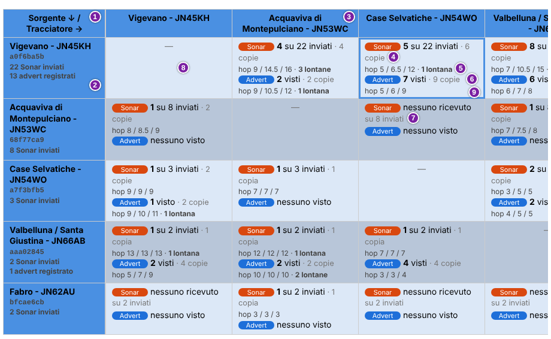
L'immagine mostra, nell'ordine indicato dai numeri:
- l'angolo della tabella, Sorgente ↓ / Tracciatore →: le righe sono sorgenti, le colonne tracciatori. Un Nodo compare nei due ruoli, come riga e come colonna;
- l'intestazione di una riga: nome della sorgente, prefisso, numero di messaggi Sonar inviati e di advert registrati;
- l'intestazione di una colonna: il nome del tracciatore;
- la riga Sonar, per esempio «5 su 22 inviati · 6 copie»: 5 messaggi arrivati su 22 inviati, in 6 copie;
- gli hop delle copie Sonar ricevute: minimo, mediana e massimo. «1 lontana» conta le copie lontane. Una riga uguale, per esempio «hop 5 / 6 / 9», sta sotto la riga Advert;
- la riga Advert, per esempio «7 visti · 9 copie»: 7 advert della sorgente visti dal tracciatore, in 9 copie;
- «nessuno ricevuto» seguito da «su 8 inviati»: nessun messaggio Sonar inviato dalla sorgente è arrivato al tracciatore;
- la cella di una sorgente sul proprio Nodo, che mostra «—»;
- la cella selezionata, con il bordo blu.
Schermata d'esempio. La matrice è tagliata a destra.
Nella riga Sonar il numero dopo «su» conta i messaggi inviati dalla sorgente, compresi quelli di cui non si sa se siano partiti. Se per la sorgente non risultano messaggi inviati compare solo il numero dei messaggi ricevuti. Nella riga Advert compare «nessuno visto» se il tracciatore non ha visto advert della sorgente.
Passando il mouse sulla cella «—» compare «Un nodo non registra le proprie trasmissioni come ricevute.». Se per un tipo di pacchetto il Nodo non registra dati, al posto della riga compare «nessun dato».
Un clic su una cella seleziona quella coppia nel pannello 4 e porta la pagina al pannello. Con molti tracciatori la matrice scorre in orizzontale e la prima colonna resta ferma. Senza sorgenti compare «Nessuna sorgente Sonar in questa finestra, quindi non c'è ancora nulla da confrontare.».
6.5 Pannello 3: istogramma degli hop
Il pannello 3. Istogramma degli hop mostra quante copie hanno ricevuto ciascun numero di hop. Ha due serie: gli advert in blu e i messaggi Sonar in arancione. Si confrontano per forma, anche se gli advert sono molto più numerosi.
Le copie contate sono quelle ricevute dai tracciatori da sorgenti Sonar. Gli advert si contano solo dal periodo di confronto (sezione 6.3).
- Tracciatore: Tutti i tracciatori oppure un solo tracciatore.
- Ambito: Entrambi, Senza regione (FLOOD) oppure Con regione (TC_FLOOD). Conta solo i pacchetti dell'ambito scelto.
- Conteggio: Tutte le copie ricevute conta ogni copia. Copia migliore di ogni trasmissione conta, per ogni trasmissione e ogni tracciatore, la sola copia con più hop. L'unità diventa la trasmissione (sezione 6.2).
- Asse Y: Quota di ogni serie mostra ogni barra come percentuale del totale della sua serie. Numero mostra il numero di copie, o di trasmissioni con Copia migliore di ogni trasmissione.
Per impostazione predefinita i controlli sono su Tutti i tracciatori, Entrambi, Tutte le copie ricevute e Quota di ogni serie. Il browser ricorda le scelte di Ambito, Conteggio e Asse Y.
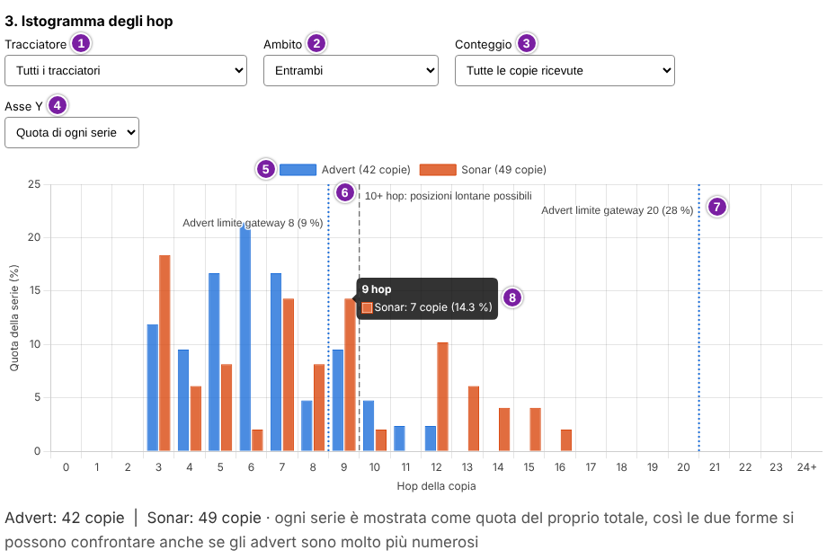
L'immagine mostra, nell'ordine indicato dai numeri:
- il selettore Tracciatore;
- il selettore Ambito;
- il selettore Conteggio;
- il selettore Asse Y;
- la legenda, con il numero di copie di ogni serie, per esempio «Advert (42 copie)»;
- la linea grigia tratteggiata «10+ hop: posizioni lontane possibili»: a destra ci sono le copie con 10 hop o più;
- una linea punteggiata di limite del gateway, per esempio «Advert limite gateway 20 (28 %)»;
- la finestra che compare passando il mouse su una barra, per esempio «9 hop» e «Sonar: 7 copie (14.3 %)».
Schermata d'esempio.
L'asse orizzontale, Hop della copia, va da 0 a 23. L'ultima colonna, «24+», raccoglie le copie con 24 hop o più. L'asse verticale riporta Quota della serie (%) con Quota di ogni serie, oppure «Numero di copie» con Numero. Con Copia migliore di ogni trasmissione compare «Numero di trasmissioni».
Passando il mouse su una barra la finestra riporta il numero di hop, il numero di copie e la quota della serie.
Sotto il grafico una riga riporta il totale di ogni serie, per esempio «Advert: 42 copie | Sonar: 49 copie». Con Quota di ogni serie aggiunge che ogni serie è mostrata come quota del proprio totale. Senza copie compare «Nessuna copia di advert o Sonar registrata per questa selezione.».
Le linee punteggiate colorate indicano i limiti dei gateway. Secondo l'ipotesi di lavoro della sezione 6.8, una copia non può avere più hop del limite del suo gateway. Perciò, oltre la linea, quel tipo di pacchetto arriva solo attraverso altri gateway.
Il testo sotto il grafico riporta, per ogni linea, la quota di copie che passano da gateway con quel limite. Per esempio: «28 % delle copie di tipo advert presso questo tracciatore (60 su 214) passano da un gateway con un limite di 20 hop».
Le linee sono al massimo due per tipo di pacchetto e compaiono solo per quote di almeno il 5 %. Sono calcolate su tutte le copie del periodo, da qualsiasi sorgente, e non solo su quelle delle barre. Il limite è noto solo per i repeater gestiti da trace-mon (sezione 6.8).
6.6 Pannello 4: confronto della coppia
Il pannello 4. Confronto della coppia mette a confronto, per una sorgente e un tracciatore, i path degli advert e quelli dei messaggi Sonar. Per ogni path dice se un pacchetto dell'altro tipo avrebbe potuto seguirlo.
- Sorgente: la sorgente, con il prefisso tra parentesi.
- Tracciatore: il tracciatore. L'elenco non comprende il Nodo della sorgente scelta.
Un clic su una cella della matrice (sezione 6.4) imposta i due selettori. A ogni cambio di coppia la mappa mostra i due path più frequenti, uno per tipo di pacchetto.
Sotto i selettori una riga riassume la coppia. Comincia, per esempio, con «Sonar: 8 messaggi, 12 copie, hop 7 / 10.5 / 15». Prosegue con «Advert: 6 visti, 10 copie, hop 6 / 7 / 8» e finisce con «(hop: min / mediana / max)». Gli hop sono il minimo, la mediana e il massimo delle copie di quella coppia.
Senza dati compare «Nessun dato per questa coppia.».
Tabelle dei path
Due tabelle elencano i path registrati per la coppia: Path degli advert, con un quadratino blu, e Path Sonar, con un quadratino arancione. Ogni riga è un path con un ambito, e conta le copie che lo hanno seguito. Le righe stanno in ordine di numero di copie e, a parità, dalla più recente.
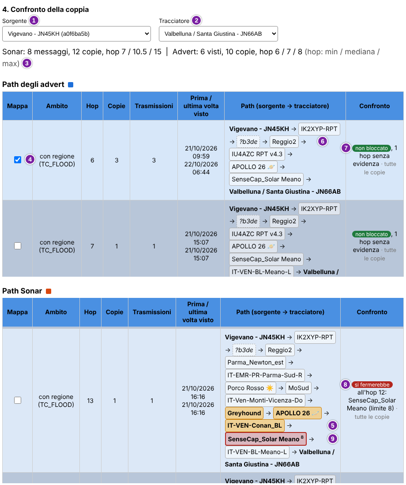
L'immagine mostra, nell'ordine indicato dai numeri:
- il selettore Sorgente;
- il selettore Tracciatore;
- la riga di riepilogo, che finisce con «(hop: min / mediana / max)»;
- la casella della colonna Mappa di un path;
- i repeater in posizione lontana, in grassetto su fondo arancione;
- un hop non risolto, «?b3de», in corsivo con il bordo tratteggiato;
- il badge non bloccato nella colonna Confronto;
- il badge si fermerebbe nella stessa colonna;
- il repeater che si fermerebbe, con il bordo rosso e il suo limite in piccolo.
Schermata d'esempio. Ogni tabella è tagliata in basso. La tabella dei path Sonar è scorsa fino a mostrare un path che si fermerebbe.
- Mappa: casella che disegna il path sulla mappa sotto le tabelle.
- Ambito: senza regione (FLOOD) oppure con regione (TC_FLOOD). Lo stesso path con due ambiti occupa due righe.
- Hop: numero di hop del path.
- Copie: numero di copie ricevute con quel path.
- Trasmissioni: numero di trasmissioni distinte che hanno dato quelle copie.
- Prima / ultima volta visto: data e ora della prima e dell'ultima di quelle copie.
- Path (sorgente → tracciatore): il path, con la sorgente e il tracciatore in grassetto e un riquadro con il nome per ogni repeater.
- Confronto: giudizio sul path, descritto sotto.
Ogni tabella sta in un riquadro a scorrimento. Se i path sono troppi, sono elencati i più frequenti e compare «N path meno frequenti non elencati.». Senza path compare «Nessun path registrato per questa coppia in questa finestra».
Come si legge un path
Il nome di un repeater compare solo se il suo hash identifica un solo repeater noto (sezione 2.6). Altrimenti l'hop è scritto «?» seguito dall'hash, in corsivo e con il bordo tratteggiato. Passandoci il mouse si legge il motivo: l'hash è condiviso da più repeater noti, oppure nessun repeater noto lo ha.
Passando il mouse su un repeater compaiono la posizione, l'hash e l'inizio della chiave pubblica. Seguono i limiti di hop noti per i due tipi di pacchetto, nella forma «limite advert: 20», e un giudizio su quell'hop. Il giudizio riguarda l'altro tipo di pacchetto: nei path Sonar parla di un advert, nei path degli advert di un messaggio Sonar.
- «un advert si fermerebbe prima della posizione N»: il limite noto è inferiore alla posizione.
- «un advert potrebbe fermarsi qui: il suo limite è cambiato in questo periodo».
- «un advert potrebbe passare (limite noto)»: il limite noto consente quella posizione.
- «un advert è stato visto ritrasmettere a questa posizione o oltre»: il limite non è noto, ma questo tipo è già stato ritrasmesso così lontano.
- «nessuna evidenza per un advert: limite non noto».
Esempio, in un path Sonar. Un repeater alla posizione 12 riporta «limite advert: 8» e «un advert si fermerebbe prima della posizione 12». Il giudizio non riguarda il messaggio Sonar, che ha raggiunto quella posizione. Dice che un advert, con quel limite, non sarebbe arrivato fin lì.
Un repeater in posizione lontana, cioè dalla 9 in poi escluso il gateway, ha il nome in grassetto su fondo arancione. Il repeater che fermerebbe il pacchetto ha il bordo rosso e il suo limite in piccolo, accanto al nome. Un repeater il cui limite è cambiato nel periodo ha il bordo punteggiato.
Colonna Confronto
La colonna Confronto dice se un pacchetto dell'altro tipo, con lo stesso ambito, sugli stessi repeater e nello stesso momento, avrebbe potuto seguire quel path. Il giudizio usa solo i limiti di hop che trace-mon conosce. I repeater senza limite noto non sono controllati. Descrive un path: non classifica un repeater.
- si fermerebbe, in rosso: almeno un repeater ha un limite noto inferiore alla sua posizione. Il testo indica dove, per esempio «all'hop 12: SenseCap_Solar Meano (limite 8)».
- limite in cambiamento, in ambra: un repeater ha cambiato impostazione nel periodo e, con uno dei due valori, avrebbe fermato il pacchetto.
- non bloccato, in verde: almeno un repeater ha un limite noto e nessuno fermerebbe il pacchetto. «N hop senza evidenza» conta gli hop di cui non si sa nulla.
- limite non noto, in grigio: nessun repeater del path ha un limite noto, quindi il confronto non dice nulla.
Ogni badge è seguito da «tutte le copie», se il giudizio vale per ogni copia della riga, oppure da «N su M copie». Una riga può avere più badge, perché i limiti possono essere cambiati tra una copia e l'altra. Se la stessa sequenza di repeater compare anche nell'altra tabella, un badge viola, «anche in Sonar» o «anche in advert», lo segnala. Il confronto non guarda l'ambito.
Mappa
La mappa disegna i path con la casella Mappa spuntata. Per impostazione predefinita sono spuntati il primo path degli advert e il primo path Sonar, cioè i più frequenti. Si possono disegnare al massimo 12 path alla volta: oltre, compare «Si possono disegnare al massimo 12 path alla volta.». Il pulsante Cancella mappa toglie tutte le spunte.
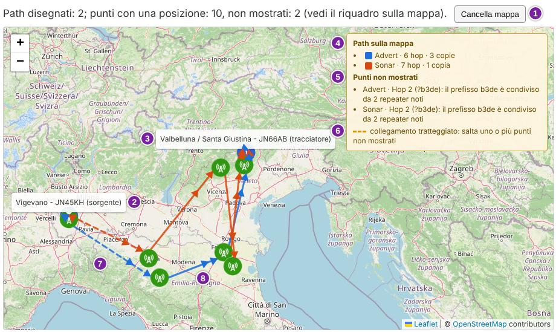
L'immagine mostra, nell'ordine indicato dai numeri:
- il pulsante Cancella mappa;
- l'etichetta della sorgente, «(sorgente)» dopo il nome;
- l'etichetta del tracciatore, «(tracciatore)» dopo il nome;
- il riquadro Path sulla mappa, con tipo, hop e copie di ogni path disegnato;
- il riquadro Punti non mostrati, con posizione, hash e motivo;
- la legenda del tratteggio: «collegamento tratteggiato: salta uno o più punti non mostrati»;
- un collegamento tratteggiato, che salta un punto non mostrato;
- una freccia, che indica il verso del path.
Schermata d'esempio.
Sopra la mappa una riga riporta quanti path sono disegnati e quanti punti hanno una posizione. Per esempio: «Path disegnati: 2; punti con una posizione: 10, non mostrati: 2 (vedi il riquadro sulla mappa)».
Gli advert sono in blu, i messaggi Sonar in arancione. I path di tipi diversi sulla stessa tratta sono disegnati affiancati. I punti sono la sorgente, i repeater e il tracciatore, con le posizioni attuali dei nodi.
Un punto senza posizione utilizzabile o con un hash non risolto non è disegnato ed è elencato nel riquadro Punti non mostrati. Senza path spuntati compare «Spunta la casella "Mappa" di uno o più path per disegnarli qui.».
Lo sfondo è una cartina OpenStreetMap caricata dal browser. Serve una connessione a Internet sul computer di chi guarda la pagina.
6.7 Pannello 5: repeater visti lontano dalla sorgente
Il pannello 5. Repeater visti lontano dalla sorgente elenca i repeater che compaiono alla posizione 9 o oltre nei path registrati. L'ultimo hop, cioè il gateway, non conta. L'elenco è descrittivo: non classifica il limite di nessun repeater.
Gli stati Provato ≥ 9 hop, Indicazione e Solo Sonar dicono quante prove ci sono che il repeater sia stato visto lontano. Non dicono quale sia il suo limite. La soglia degli stati è diversa da quella del pannello 1 (sezione 6.3).
Il pannello conta gli advert di qualsiasi sorgente su tutta la finestra, non solo dal periodo di confronto. Considera solo le copie con 10 hop o più. Un repeater è «visto» quando compare in una di quelle copie alla posizione 9 o oltre.
Due controlli restringono l'elenco, e una riga lo riassume.
- Stato: Tutti, Provato ≥ 9 hop, Indicazione oppure Solo Sonar.
- Nome / chiave: testo contenuto nel nome o nella chiave pubblica del repeater. Maiuscole e minuscole non contano.
La riga di riepilogo ha la forma «Repeater: 14 (provati: 3; con un'indicazione: 5; visti lontano dalla sorgente solo nei messaggi Sonar: 6). Mostrati: 14.». Se l'elenco è troppo lungo compare «L'elenco è stato troncato alla sua dimensione massima.». Senza risultati compare «Nessun repeater corrisponde».
| Repeater | Stato | Visto negli advert | Visto nei messaggi Sonar | Un advert potrebbe proseguire? | Limite advert | ||||||||
|---|---|---|---|---|---|---|---|---|---|---|---|---|---|
| Trasm. | Sorgenti | Tracciatori | Più lontana | Ultima | Trasm. | Sorgenti | Tracciatori | Più lontana | Ultima | ||||
| Repeater di esempio 1 (3f9a21bc) | Provato ≥ 9 hop | 5 | 3 | 2 | 11 | 22/10/2026 09:59 | 4 | 2 | 2 | 12 | 21/10/2026 16:16 | non bloccato 4/4 | adv 20 / 64 |
| Repeater di esempio 2 (b7c4d5e6) | Indicazione | 2 | 1 | 1 | 10 | 21/10/2026 15:07 | 3 | 1 | 1 | 12 | 21/10/2026 16:16 | si fermerebbe 3/3 Repeater di esempio 3, limite 8, hop 12 | ≥ 10 visto |
| Repeater di esempio 4 (a1b2c3d4) | Solo Sonar | nessuno visto | 3 | 1 | 1 | 13 | 20/10/2026 18:40 | limite non noto 3/3 | — | ||||
Dati d'esempio.
- Repeater: nome del repeater, o «senza nome», e sotto i primi 8 caratteri della sua chiave pubblica.
- Stato: quanto il repeater è stato visto lontano negli advert.
- Provato ≥ 9 hop, in verde: visto in almeno 3 trasmissioni di advert distinte, da almeno 2 sorgenti diverse.
- Indicazione, in ambra: visto in 1 o 2 trasmissioni, o da una sola sorgente. Non basta per considerarlo provato.
- Solo Sonar, in grigio: visto lontano solo nei messaggi Sonar, mai in un advert. Non dice nulla sul limite degli advert.
- Visto negli advert e Visto nei messaggi Sonar: cinque colonne ciascuno, con lo stesso significato. Senza avvistamenti compare «nessuno visto».
Le cinque colonne contano gli avvistamenti del repeater alla posizione 9 o oltre.
- Trasm.: trasmissioni distinte in cui il repeater è stato visto così lontano.
- Sorgenti: sorgenti distinte di quelle trasmissioni.
- Tracciatori: tracciatori distinti che le hanno ricevute.
- Più lontana: la posizione più alta alla quale il repeater è stato visto.
- Ultima: data e ora dell'ultima copia in cui è stato visto.
Le ultime due colonne dicono cosa si sa del limite degli advert.
- Un advert potrebbe proseguire?: considera le copie Sonar lontane che includono il repeater. Per ognuna dice se un advert con lo stesso ambito avrebbe potuto seguire lo stesso path, giudicando solo in base ai limiti di hop noti. I giudizi sono quelli della colonna Confronto (sezione 6.6), seguiti dal numero di copie nella forma «3/5». Con si fermerebbe compare anche dove: nome del repeater che ferma il pacchetto, suo limite e posizione.
- Limite advert: per un repeater gestito da trace-mon, è il limite di hop degli advert. Ha la forma «adv 20 / 64», cioè senza regione e con regione. Altrimenti compare «≥ 10 visto»: la posizione più alta alla quale ha ritrasmesso un advert, quindi un limite almeno pari a quella. Senza informazioni compare «—».
Le righe stanno in ordine di stato, poi di numero di trasmissioni di advert, poi di messaggi Sonar e infine di nome.
6.8 Pannello 6: limiti operativi
Il pannello 6. Limiti operativi riporta i limiti di hop dei repeater. Un repeater ritrasmette un pacchetto in flood solo fino a un certo numero di hop. Lo stabiliscono tre impostazioni: Flood Max Hops (Unscoped), Flood Max Hops (Advert) e Flood Max Hops (sezione 5.3).
trace-mon legge queste impostazioni solo dai repeater che gestisce, cioè quelli della scheda Repeater. Per ogni altro repeater di un path non sono note: si conosce soltanto la posizione più alta alla quale è stato visto ritrasmettere.
Un repeater alla posizione k di un path può comparire solo se k rientra nel suo limite. Lo schema mostra il caso di un limite 8.
Lo schema mostra le posizioni di un path, contate dalla sorgente. Una copia con 7 hop ha il gateway alla posizione 7, quindi può arrivare da un repeater con limite 8. Una copia con 10 hop ha il gateway alla posizione 10 e non può arrivare da quel repeater.
Il limite effettivo che il pannello usa per ogni tipo di pacchetto è un'ipotesi di lavoro, ricavata dalle tre impostazioni.
- Advert, senza regione: il minore tra Flood Max Hops (Unscoped) e Flood Max Hops (Advert).
- Advert, con regione: Flood Max Hops (Advert).
- Messaggio, senza regione: il minore tra Flood Max Hops (Unscoped) e Flood Max Hops.
- Messaggio, con regione: Flood Max Hops.
Nelle quattro voci «Messaggio» indica il messaggio Sonar. «Senza regione» è l'ambito FLOOD, che le impostazioni chiamano Unscoped. «Con regione» è l'ambito TC_FLOOD (sezione 6.2).
Nei pannelli 3, 4 e 5 si fermerebbe e non bloccato riguardano l'altro tipo di pacchetto. Dicono se avrebbe seguito lo stesso path, con lo stesso ambito. Il giudizio usa solo le impostazioni note. Descrive un path e non classifica un repeater.
Sotto il titolo possono comparire avvisi.
- Risultati calcolati prima che esistesse questo pannello.
- Nessuna impostazione ancora registrata: nessun repeater gestito da trace-mon è stato letto.
- Un Nodo senza tabella delle impostazioni: le sue impostazioni non sono note.
- Repeater aggiunti o non più letti nel periodo: finché le loro impostazioni non sono note, i loro hop contano come «limite non noto».
- Repeater che hanno cambiato le impostazioni nel periodo: le copie ricevute prima e dopo il cambio sono mescolate nei grafici e nelle tabelle.
Impostazioni dei repeater gestiti da trace-mon
L'elenco dei repeater non è fisso: si possono aggiungere o togliere repeater, e un Nodo può partire senza averne. La tabella segue il Periodo scelto. Mostra le impostazioni in vigore alla fine del periodo, solo per i repeater le cui impostazioni sono note in quel periodo.
| Repeater | Impostazioni a fine periodo | Limite effettivo (hop) | Impostazioni note | Cambiamenti in questo periodo | |||||
|---|---|---|---|---|---|---|---|---|---|
| Flood Max Hops (Unscoped) | Flood Max Hops (Advert) | Flood Max Hops | Advert, senza regione | Advert, con regione | Messaggio, senza regione | Messaggio, con regione | |||
| Repeater di esempio 3 (e5f6a7b8) | 8 | 8 | 64 | 8 | 8 | 8 | 64 | 12/09/2026 08:00 → 22/10/2026 10:00 410 letture · Nodo A | Unscoped: 20 → 8, tra 21/10/2026 14:00 e 21/10/2026 16:00 |
| Repeater di esempio 1 (3f9a21bc) | 20 | 64 | 64 | 20 | 64 | 20 | 64 | 01/09/2026 08:00 → 22/10/2026 10:00 640 letture · Nodo A, Nodo B | nessuno in questo periodo |
| Repeater di esempio 5 (c9d8e7f6) | ? | ? | ? | ? | ? | ? | ? | 15/09/2026 08:00 → 15/09/2026 08:30 3 letture · Nodo B | nessuno registrato |
Dati d'esempio. L'ultima riga ha anche il badge nessuna lettura valida.
- Repeater: nome e primi 8 caratteri della chiave pubblica. Il badge nessuna lettura valida indica che ogni lettura era vuota o non valida: nessuna impostazione è nota.
- Impostazioni a fine periodo: i tre valori in vigore alla fine del periodo scelto, non quelli attuali.
- Limite effettivo (hop): il limite per i quattro tipi di pacchetto sopra, calcolato con la regola indicata. I valori sono in grassetto.
- Impostazioni note: data e ora della prima e dell'ultima lettura delle impostazioni del repeater, su tutta la storia conservata e non solo sul periodo. Sotto, il numero di letture e i Nodi che le hanno fatte.
- Cambiamenti in questo periodo: fino a tre cambiamenti, nella forma «Unscoped: 20 → 8», con le date delle due letture che li hanno rilevati. Seguono «+N altri» se sono di più. Senza cambiamenti compare «nessuno in questo periodo» o «nessuno registrato».
Nelle celle dei valori alcuni stili hanno un significato, spiegato da un suggerimento passando il mouse. Un numero in corsivo, con la sottolineatura punteggiata, è stato visto in una sola lettura e non è confermato. Un «a–b» sottolineato indica un valore cambiato tra due letture: è uno dei due.
Un numero attenuato e sottolineato non era noto alla fine del periodo, perché nessuna lettura valida era recente: è l'ultimo valore letto. Un «?» indica un valore non noto.
Le righe dei repeater che hanno cambiato impostazioni nel periodo hanno lo sfondo ambra. Un badge aggiunto in questo periodo segna un repeater letto per la prima volta dopo l'inizio del periodo. Un badge non più letto segna un repeater senza letture recenti prima della fine del periodo: può essere stato rimosso o non rispondere. I pacchetti ricevuti quando le impostazioni non erano note non sono giudicati in base ad esse.
Le righe stanno in ordine: prima i repeater con un limite noto, dal più restrittivo, poi quelli senza nessuna lettura valida. Sotto la tabella una nota elenca i repeater le cui impostazioni sono note solo prima o solo dopo il periodo. Non sono in tabella. Senza repeater compare «Nessun repeater con impostazioni note in questo periodo».
Da dove vengono le impostazioni
Ogni Nodo legge le impostazioni dei propri repeater. Un repeater di un Nodo influisce però sui pacchetti visti da tutti gli altri Nodi, quindi le letture di tutti i Nodi sono combinate.
| Nodo | Letture | Repeater | In questo periodo | Prima → ultima lettura | Nota |
|---|---|---|---|---|---|
| Nodo A | 810 | 2 | 2 | 01/09/2026 08:00 → 22/10/2026 10:00 | — |
| Nodo B | 243 | 2 | 2 | 01/09/2026 08:10 → 22/10/2026 10:02 | — |
Dati d'esempio.
- Nodo: il Nodo che ha letto le impostazioni.
- Letture: letture delle impostazioni dei repeater registrate dal Nodo, compreso lo storico conservato.
- Repeater: repeater distinti gestiti dal Nodo con almeno una lettura.
- In questo periodo: quanti di quei repeater hanno impostazioni note nel periodo scelto.
- Prima → ultima lettura: data e ora della prima e dell'ultima lettura.
- Nota: «—» se non c'è nulla da segnalare. Altrimenti un testo. Un Nodo senza tabella delle impostazioni, o con il database non leggibile, ha il badge nessuna tabella o da verificare. Un Nodo senza repeater gestiti non è un problema: la tabella si popola quando ne viene aggiunto e letto uno.
Limite del gateway presso ogni tracciatore
Il gateway è l'ultimo repeater prima del tracciatore. Secondo l'ipotesi di lavoro di questa sezione, una copia non può avere più hop del limite del suo gateway. Dove i gateway hanno un limite basso, il tracciatore non può vedere path lunghi di quel tipo, qualunque cosa facciano i repeater intermedi.
La tabella ha una riga per tracciatore, tipo di pacchetto e ambito con almeno una copia. Conta tutte le copie del periodo, da qualsiasi sorgente. I limiti sono noti solo per i repeater gestiti da trace-mon.
| Tracciatore | Pacchetti | Copie | Gateway identificato | Limite noto | Limite < 10 | Limiti dei gateway | Gateway principali (copie) |
|---|---|---|---|---|---|---|---|
| Nodo A | Advert, senza regione | 214 (+12 diretti) | 93 % | 37 % (3 durante il cambio) | 9 % | 20 · 60 8 · 19 | Repeater di esempio 1 (limite 20) · 60 Repeater di esempio 3 (limite 8) · 19 Repeater di esempio 6 (limite sconosciuto, visto ≥ 6) · 31 |
Dati d'esempio. La tabella è abbreviata: ha una sola riga.
- Tracciatore e Pacchetti: il tracciatore, il tipo di pacchetto, Advert o Sonar (il messaggio Sonar), e l'ambito.
- Copie: copie ricevute. «+N diretti» conta le copie dirette, senza gateway.
- Gateway identificato: quota di copie il cui gateway ha un nome noto e univoco.
- Limite noto: quota di copie il cui gateway ha un'impostazione nota. «N durante il cambio» conta le copie ricevute mentre l'impostazione cambiava.
- Limite < 10: quota di copie arrivate da un gateway con un limite inferiore a 10 hop. Non dicono nulla sulle posizioni 9 e oltre.
- Limiti dei gateway: i limiti noti, nella forma «limite · copie». Senza limiti noti compare «nessuno noto».
- Gateway principali (copie): i gateway più frequenti, con il numero di copie. Il limite è quello noto; altrimenti compare «limite sconosciuto, visto ≥ N» oppure «limite sconosciuto».
Senza copie compare «Nessuna copia registrata in questo periodo».
6.9 Qualità: panoramica e termini
L'analisi Qualità dei path e simmetrie mostra quanto è buono ogni collegamento radio tra due repeater e quanto è equilibrato tra le due direzioni. Parte dai risultati delle tracce eseguite dai Nodi (sezione 3). Segnala anche i path che rispondono poco pur avendo un buon margine.
Una traccia manda un pacchetto lungo un path di repeater e ne attende il ritorno. Per ogni passaggio tra due elementi del path il ricevente riporta l'SNR (sezione 2.7). Lo stesso collegamento può quindi essere misurato nelle due direzioni, nella stessa traccia o in tracce diverse.
I risultati sono indicazioni ricavate dalle tracce registrate, non misure di laboratorio. L'SNR esiste solo per le tracce che hanno avuto risposta. Un TIMEOUT non è attribuibile a una singola tratta. La differenza tra le due direzioni mescola propagazione, potenza di trasmissione e rumore di fondo ai due estremi.
Il Periodo scelto (sezione 6.1) decide quali tracce entrano nell'analisi. Tutta la storia comprende il file di tracce corrente e tutti i mesi archiviati. L'analisi usa le tracce di tutti i Nodi configurati.
Termini della qualità
I termini valgono per i pannelli da 1 a 7 e sono definiti qui. Le soglie indicate sono quelle in uso e il pannello 1 le riporta (sezione 6.10).
- Tratta: passaggio tra due elementi del path di una traccia. È ciò che la scheda Tracce chiama tratto (sezione 3.2). L'SNR di una tratta è quello misurato da chi riceve. Un path con n repeater, anche ripetuti, ha n + 1 tratte.
- Collegamento: coppia di due repeater, misurata nelle due direzioni. Si scrive A ↔ B: il primo repeater nominato è A, il secondo è B. Le tratte che toccano SRC non sono collegamenti: un esempio è più avanti in questa sezione.
- Direzione: A → B è l'SNR medio delle tratte da A a B. B → A è quello delle tratte da B ad A.
- Campione: un valore di SNR di una tratta, letto in una traccia con risposta. Una direzione, un path o una cella di una tabella mostrano un valore solo con almeno 30 campioni.
- Soglia di demodulazione: SNR minimo che la radio sa demodulare. L'analisi usa -10 dB.
- Margine: di quanto l'SNR medio della direzione più debole supera la soglia di demodulazione. Dice quanto spazio ha il collegamento prima di cedere. Per un path conta la tratta più debole che ha campioni sufficienti.
- Differenza Δ: A → B meno B → A, in dB. Può essere positiva o negativa. La simmetria dipende dal suo valore senza segno.
- Fascia oraria: gruppo di 3 ore del giorno, per un totale di 8 fasce. Le ore sono quelle dell'orologio del Nodo, senza conversione di fuso orario.
Un collegamento può essere simmetrico ma debole, oppure forte ma sbilanciato. Per questo l'analisi giudica separatamente simmetria e margine e mostra i due giudizi insieme. I badge hanno questi significati e colori.
| Giudizio | Badge | Condizione | Colore |
|---|---|---|---|
| Simmetria | simmetrico | Δ sotto 3 dB | Verde |
| Simmetria | moderato | Δ da 3 dB a 6 dB | Ambra |
| Simmetria | asimmetrico | Δ oltre 6 dB | Rosso |
| Simmetria | pochi campioni | Meno di 30 campioni in almeno una direzione | Grigio |
| Simmetria | una sola direzione | Collegamento misurato in una sola direzione | Grigio |
| Margine | critico | Margine sotto 3 dB | Rosso |
| Margine | sufficiente | Margine da 3 dB a meno di 10 dB | Ambra |
| Margine | buono | Margine di 10 dB o più | Verde |
Un path ha uno di tre tipi, secondo la forma della sua sequenza di repeater.
- speculare: il ritorno ripercorre l'andata. I repeater sono in numero dispari, almeno tre, e la sequenza è la stessa letta al contrario, come in SRC→2559→0940→2559→SRC (sezione 3). Ogni collegamento è misurato nelle due direzioni dalla stessa traccia.
- non speculare: ogni altro path con più di un repeater, anche se parte e torna a SRC. I due versi di un collegamento sono misurati in tracce diverse.
- diretto: path con un solo repeater, quindi senza nessun collegamento tra due repeater. Qui diretto ha un senso diverso da quello della sezione 2.5, che indica la ricezione senza repeater.
Un path è segnalato come anomalia quando ha un margine buono ma poche tracce con risposta. In concreto il suo margine è di 10 dB o più, ha almeno 30 tracce e meno del 25 % ha avuto risposta. È uno spunto da approfondire, non una diagnosi.
Questa tabella mostra come le tratte di un path speculare si dividono tra collegamenti e radio locale. I due repeater sono indicati con l'hash.
| Tratta | Direzione | Che cosa è |
|---|---|---|
| SRC→2559 | Radio locale del Nodo: non è un collegamento | |
| 2559→0940 | A → B | Collegamento 2559 ↔ 0940 |
| 0940→2559 | B → A | Collegamento 2559 ↔ 0940 |
| 2559→SRC | Radio locale del Nodo: non è un collegamento |
Dati d'esempio. Le tratte con SRC non sono collegamenti, ma contano nel margine del path (sezione 6.14).
Un hop che non si associa a un repeater noto compare come «repeater sconosciuto (2559)», con l'hash tra parentesi. Succede quando l'hash è sconosciuto o ambiguo (sezione 2.6). La tratta tra il Nodo e il primo repeater compare come «radio locale di» seguito dal nome del Nodo.
L'analisi si legge dal generale al particolare, un pannello alla volta.
- Il pannello 1 dice su quali tracce poggia l'analisi: quante, di quali Nodi e di quali mesi. Si guarda per primo (sezione 6.10).
- Il pannello 2 conta i collegamenti per simmetria e margine. Un clic su un numero elenca quei collegamenti nel pannello 3 (sezione 6.11).
- Il pannello 3 elenca i collegamenti con SNR, simmetria e margine. Un clic su una riga sceglie il collegamento per i pannelli 4 e 6 (sezione 6.12).
- Il pannello 4 mostra l'andamento nel tempo del collegamento scelto (sezione 6.13).
- Il pannello 5 mostra i path eseguiti dai Nodi, con la loro raggiungibilità e il loro margine (sezione 6.14).
- Il pannello 6 mostra come cambia il collegamento o il path scelto nel corso della giornata e della settimana (sezione 6.15).
- Il pannello 7 confronta lo stesso collegamento misurato da Nodi diversi (sezione 6.16).
L'analisi descrive le tracce registrate: non indica interventi da fare sui repeater.
6.10 Qualità, pannello 1: stato dei dati e copertura
Il pannello 1. Stato dei dati e copertura dice su quali tracce poggia l'analisi: quali Nodi hanno contribuito, quante tracce hanno registrato e quante hanno avuto risposta. Conviene guardarlo prima degli altri.
Il pannello contiene due tabelle, un elenco di note e un paragrafo con le soglie in uso.
Tabella dei Nodi
| Nodo | File corrente | Archivi | Tracce registrate | Con risposta | TIMEOUT | Non utilizzabili | Path | Periodo |
|---|---|---|---|---|---|---|---|---|
| Nodo A | sì | 2 | 1850 | 1620 (87.6 %) | 230 | 35 | 12 (7 speculari, 3 non speculari, 2 diretti) | 01/09/2026 00:03 → 22/10/2026 11:16 |
| Nodo B | sì | 1 | 940 | 799 (85.0 %) | 141 | 0 | 5 (5 speculari, 0 non speculari, 0 diretti) | 01/09/2026 00:10 → 22/10/2026 11:10 |
| Totale | 2790 | 2419 (86.7 %) | 371 | 35 |
Dati d'esempio.
- Nodo: il Nodo che ha eseguito le tracce. Sul Collettore c'è una riga per ogni Nodo configurato. Una riga Totale somma i Nodi quando sono più di uno.
- File corrente: «sì» se il Nodo ha un file di tracce corrente, «no» altrimenti.
- Archivi: numero di file di tracce archiviati letti per il periodo scelto.
- Tracce registrate: numero di tracce nel periodo.
- Con risposta: tracce che hanno avuto risposta, con la quota sul totale tra parentesi.
- TIMEOUT: tracce senza risposta.
- Non utilizzabili: tracce con risposta il cui SNR non si può attribuire alle singole tratte. Succede per esempio quando il path passa due volte per la stessa tratta.
- Path: numero di path diversi eseguiti. Tra parentesi dice quanti sono speculari, non speculari e diretti.
- Periodo: data e ora della prima e dell'ultima traccia.
Tracce per mese (quota con risposta)
Una tabella con una riga per mese e una colonna per Nodo riporta le tracce registrate nel mese e, tra parentesi, la quota con risposta. Se un Nodo non ha tracce in un mese compare «nessun dato».
| Mese | Nodo A | Nodo B |
|---|---|---|
| 2026-08 | nessun dato | 150 (80.0 %) |
| 2026-09 | 1140 (88.1 %) | 520 (84.0 %) |
| 2026-10 | 710 (86.8 %) | 270 (89.6 %) |
Dati d'esempio.
Sotto la tabella compare la nota «Ogni cella: tracce registrate nel mese e, tra parentesi, la quota che ha avuto risposta.».
Note e soglie
Un elenco di note compare solo quando serve.
- Se un Nodo non ha un file di tracce, la nota dice che il nodo «non ha ancora un file di tracce».
- Se una lettura fallisce, la nota riporta il nome del Nodo e il motivo.
- Se alcuni path «passano due volte per la stessa tratta», la nota dice quanti sono. Il loro SNR non è attribuito ai collegamenti.
- Se alcuni hop non si associano a un repeater noto, la nota dice quanti sono: «hop non associati a un repeater noto». Compaiono con il loro hash.
In fondo al pannello un paragrafo riporta le soglie in uso. Sono i limiti di simmetria e di margine, la soglia di demodulazione e il numero minimo di campioni. Comprendono anche la durata della fascia oraria e il limite dell'anomalia (sezione 6.9).
6.11 Qualità, pannello 2: simmetria e margine
Il pannello 2. Simmetria e margine conta i collegamenti per simmetria e per margine. Il caso migliore è un collegamento simmetrico e con un buon margine (sezione 6.9).
Due righe riassumono i collegamenti. La prima dice quanti collegamenti sono misurati in entrambe le direzioni con campioni sufficienti, su quanti in tutto. Dice anche quanti hanno pochi campioni o una sola direzione. La seconda dice quanti sono simmetrici e con buon margine.
Sotto le righe c'è una tabella. Ogni riga è un giudizio di simmetria (simmetrico, moderato, asimmetrico) e ogni colonna è un giudizio di margine (critico, sufficiente, buono).
L'intestazione riporta il badge e l'intervallo in dB. Ogni cella conta i collegamenti con quei due giudizi. Una riga e una colonna Totale sommano i valori.
I collegamenti con pochi campioni o una sola direzione non hanno un giudizio di simmetria e non compaiono nella tabella. Li conta la prima riga di riepilogo.
Un clic su un numero diverso da 0 imposta i filtri Simmetria e Margine del pannello 3, che elenca quei collegamenti. La cella scelta ha il bordo blu. Un nuovo clic sulla stessa cella toglie il filtro.
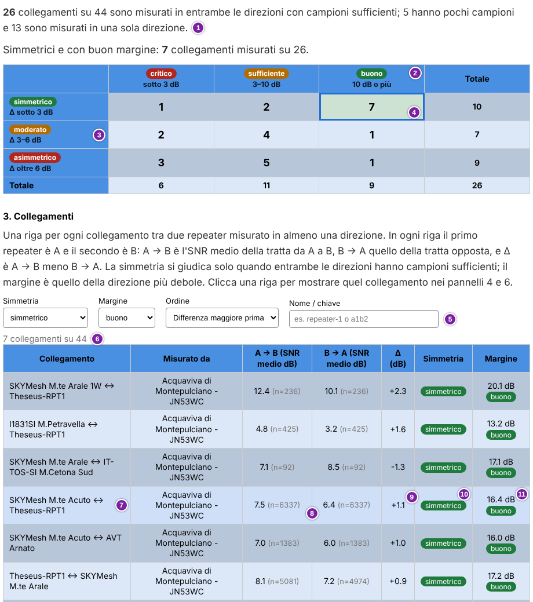
L'immagine mostra, nell'ordine indicato dai numeri, i pannelli 2 e 3:
- la riga di riepilogo, con i collegamenti misurati in entrambe le direzioni, con pochi campioni e in una sola direzione;
- l'intestazione di una colonna, cioè un giudizio di margine con il suo intervallo in dB;
- l'intestazione di una riga, cioè un giudizio di simmetria con il suo intervallo di Δ;
- la cella scelta con un clic, con il bordo blu. È il caso migliore, con lo sfondo verde. La tabella sotto è filtrata di conseguenza;
- i filtri Simmetria, Margine, Ordine e Nome / chiave (sezione 6.12);
- il conteggio dei collegamenti mostrati, per esempio «7 collegamenti su 44»;
- la riga del collegamento scelto per i pannelli 4 e 6, evidenziata;
- le colonne con l'SNR medio di ciascuna direzione e, tra parentesi, il numero di campioni;
- la colonna della differenza Δ;
- la colonna Simmetria, con il badge;
- la colonna Margine, con il valore e il badge.
Schermata d'esempio. La tabella dei collegamenti è tagliata in basso.
6.12 Qualità, pannello 3: collegamenti
Il pannello 3. Collegamenti ha una riga per ogni collegamento tra due repeater misurato in almeno una direzione. Dice quanto è forte ogni direzione, quanto le due direzioni differiscono e che margine ha il collegamento. Gli elementi da 5 a 11 dell'immagine della sezione 6.11 mostrano il pannello.
- Simmetria: Tutti, simmetrico, moderato, asimmetrico, pochi campioni oppure una sola direzione.
- Margine: Tutti, critico, sufficiente oppure buono.
- Ordine: Differenza maggiore prima, Margine minore prima oppure Nome. Il valore predefinito è Differenza maggiore prima.
- Nome / chiave: testo da cercare nei nomi mostrati.
Sopra la tabella un conteggio dice quanti collegamenti sono mostrati rispetto al totale, per esempio «7 collegamenti su 44». Senza corrispondenze compare «Nessun collegamento corrisponde ai filtri.».
| Collegamento | Misurato da | A → B (SNR medio dB) | B → A (SNR medio dB) | Δ (dB) | Simmetria | Margine |
|---|---|---|---|---|---|---|
| Repeater 1 ↔ Repeater 2 | Nodo A | 7.5 (n=637) | 6.4 (n=637) | +1.1 | simmetrico | 16.4 dB buono |
| Repeater 1 ↔ Repeater 3 | Nodo A, Nodo B | 2.1 (n=212) | -6.8 (n=198) | +8.9 | asimmetrico | 3.2 dB sufficiente |
| Repeater 4 ↔ Repeater 2 | Nodo B | 3.0 (n=140) | -1.5 (n=135) | +4.5 | moderato | 8.5 dB sufficiente |
Dati d'esempio.
- Collegamento: i nomi dei due repeater, scritti A ↔ B. Un repeater non associato a un nome è «repeater sconosciuto» con il suo hash tra parentesi (sezione 6.9).
- Misurato da: i Nodi che hanno misurato il collegamento.
- A → B (SNR medio dB) e B → A (SNR medio dB): SNR medio di ciascuna direzione, con il numero di campioni. Senza campioni compare «nessun dato». Passando il mouse su un valore compare la deviazione standard.
- La colonna Δ (dB) riporta A → B meno B → A. Per i collegamenti misurati dai path speculari, passando il mouse compare anche la differenza nella stessa traccia, con media, deviazione standard e numero di tracce.
- Simmetria: il badge di simmetria. Un collegamento senza campioni sufficienti in una direzione ha pochi campioni. Uno misurato in una sola direzione ha una sola direzione.
- Margine: il margine, in dB, e il suo badge. È quello della direzione più debole.
Le righe sono ordinate così. Vengono prima i collegamenti misurati in entrambe le direzioni con campioni sufficienti, nell'ordine scelto con Ordine. Seguono quelli con pochi campioni e poi quelli con una sola direzione. Con Nome l'ordine è alfabetico.
Un clic su una riga sceglie quel collegamento per i pannelli 4 e 6. La riga scelta è evidenziata.
6.13 Qualità, pannello 4: andamento nel tempo
Il pannello 4. Andamento nel tempo mostra l'SNR medio di un collegamento nel tempo, con una linea per direzione. Sono elencati solo i collegamenti con campioni sufficienti in entrambe le direzioni.
- Collegamento: il collegamento da mostrare. Ogni voce riporta il nome e il giudizio di simmetria. Anche un clic su una riga del pannello 3 sceglie il collegamento.
- Raggruppa per: Giorno o Mese. Il valore iniziale è Mese se i dati del collegamento coprono più di 92 giorni, altrimenti Giorno.
- Mostra: SNR delle due direzioni oppure Differenza Δ.
Con SNR delle due direzioni il grafico ha due linee, una blu e una arancione, con la legenda. L'asse verticale è «SNR medio (dB)». Con Differenza Δ il grafico ha una sola linea, con l'asse «Differenza tra le due direzioni Δ (dB)». Quattro linee tratteggiate segnano i limiti di simmetria: ±3 dB e ±6 dB.
Un punto pieno ha campioni sufficienti, cioè almeno 30. Un punto vuoto ne ha meno ed è da leggere con cautela. Passando il mouse su un punto compaiono la data, il valore e il numero di campioni di ciascuna direzione.
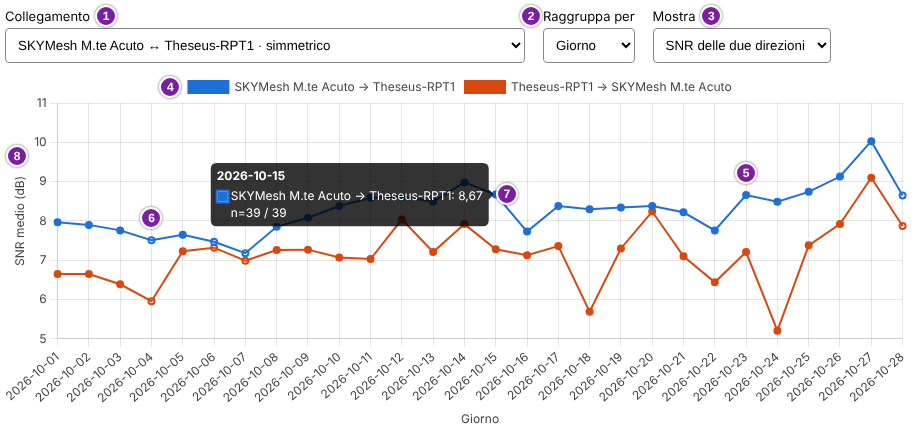
L'immagine mostra, nell'ordine indicato dai numeri:
- il selettore Collegamento;
- il selettore Raggruppa per, qui su Giorno;
- il selettore Mostra;
- la legenda con le due direzioni;
- un punto pieno, con campioni sufficienti;
- un punto vuoto, con meno di 30 campioni;
- la finestra che compare passando il mouse su un punto, con la data, il valore di ciascuna direzione e il numero di campioni;
- l'asse verticale, SNR medio (dB).
Schermata d'esempio. Il periodo è In tempo reale (file di tracce corrente).
Se il collegamento scelto non ha una serie, compare «Questo collegamento non ha una serie giornaliera: servono campioni sufficienti in entrambe le direzioni.».
6.14 Qualità, pannello 5: raggiungibilità e margine
Il pannello 5. Raggiungibilità e margine ha un punto per ogni path eseguito da un Nodo. Confronta il margine della tratta più debole del path con la quota di tracce che hanno avuto risposta. Un path con un buon margine ma poche risposte è segnalato come anomalia (sezione 6.9).
Il selettore Nodo sceglie un Nodo oppure Tutti i nodi. Sopra il grafico una riga conta i path, per esempio «12 path nel grafico, 15 in elenco, 2 segnalati come anomalia». Se alcuni path non hanno ancora un margine, la riga aggiunge quanti sono: non compaiono nel grafico, ma restano nell'elenco.
Nel grafico l'asse orizzontale è il margine della tratta più debole, Margine della tratta più debole (dB). L'asse verticale è Tracce con risposta (%).
Un punto blu è un path. Un punto rosso è un path segnalato come anomalia. Un punto vuoto ha meno di 30 tracce.
Due linee tratteggiate mostrano le soglie dell'anomalia: «margine 10 dB», verticale, e «25 % con risposta», orizzontale. Passando il mouse su un punto compaiono il Nodo, il path, il margine, la quota con risposta e il numero di tracce.
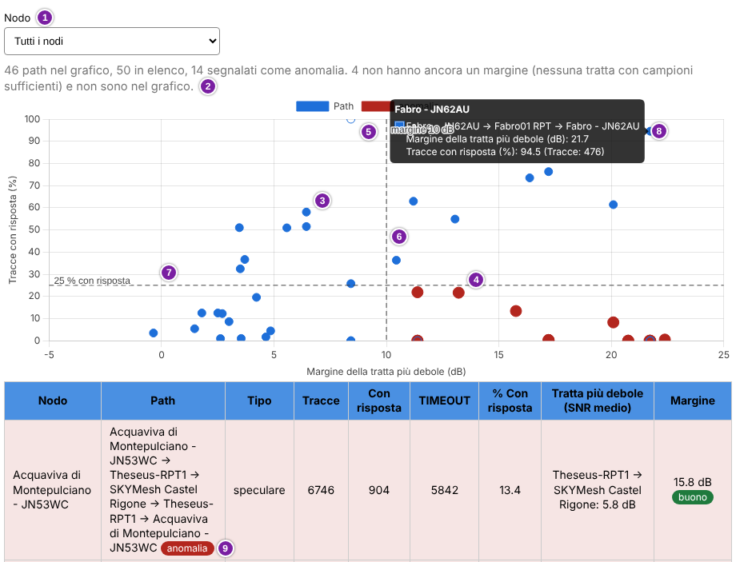
L'immagine mostra, nell'ordine indicato dai numeri:
- il selettore Nodo;
- la riga che conta i path;
- un punto blu, cioè un path;
- un punto rosso, cioè un path segnalato come anomalia;
- un punto vuoto, cioè un path con meno di 30 tracce;
- la linea verticale tratteggiata «margine 10 dB»;
- la linea orizzontale tratteggiata «25 % con risposta»;
- la finestra di un punto, con Nodo, path, margine, quota con risposta e numero di tracce;
- il badge anomalia nella prima riga della tabella.
Schermata d'esempio. Il periodo è Tutta la storia. La tabella è tagliata in basso.
Sotto il grafico una tabella elenca tutti i path del Nodo scelto.
| Nodo | Path | Tipo | Tracce | Con risposta | TIMEOUT | % Con risposta | Tratta più debole (SNR medio) | Margine |
|---|---|---|---|---|---|---|---|---|
| Nodo A | Repeater 1 → Repeater 2 → Repeater 1 anomalia | speculare | 476 | 19 | 457 | 4.0 | Repeater 2 → Repeater 1: 11.8 dB | 21.8 dB buono |
| Nodo A | Repeater 5 → Repeater 6 → Repeater 5 | speculare | 12 | 9 | 3 | 75.0 | — | — |
Dati d'esempio. La seconda riga non ha un margine: nessuna tratta ha almeno 30 campioni.
- Tipo: speculare, non speculare o diretto (sezione 6.9).
- La colonna % Con risposta è la quota delle tracce che hanno avuto risposta.
- Tratta più debole (SNR medio): la tratta con l'SNR medio più basso, tra quelle con campioni sufficienti. Le tratte che toccano SRC contano qui. Se nessuna ha campioni sufficienti compare «—».
- Margine: il margine della tratta più debole, con il suo badge.
I path segnalati come anomalia compaiono per primi, con lo sfondo rosato e il badge. Il badge tratta ripetuta indica che il path attraversa due volte la stessa tratta: il suo SNR non è attribuito ai collegamenti (sezione 6.10). Un clic su una riga mostra quel path nel pannello 6.
6.15 Qualità, pannello 6: profilo per giorno e ora
Il pannello 6. Profilo per giorno e ora mostra come si comporta il collegamento o il path scelto nel corso della giornata e della settimana. Le ore sono quelle dell'orologio del Nodo (sezione 6.9).
- Osserva: Collegamento (due repeater) oppure Path (eseguito da un nodo).
- Collegamento / path: il collegamento o il path da mostrare. Un clic su una riga del pannello 3 sceglie un collegamento. Un clic su una riga del pannello 5 sceglie un path.
- Mostra: la grandezza da leggere nelle celle.
- Per un collegamento: «A → B: SNR medio (dB)».
- Per un collegamento: «B → A: SNR medio (dB)».
- Per un collegamento: Δ: prima → seconda meno seconda → prima (dB).
- Per un path: Tracce con risposta (%).
Sotto i selettori ci sono tre tabelle: Per fascia oraria, Per giorno della settimana e Giorno × fascia oraria. La terza incrocia le prime due. Ogni fascia dura 3 ore. Passando il mouse su una cella compare il numero di campioni.
Una cella con meno di 30 campioni non mostra un valore, ma «—». Con la differenza Δ si contano i campioni della direzione che ne ha meno.
Le celle sono colorate. Con l'SNR e con la quota di tracce con risposta il blu è tanto più intenso quanto più il valore è alto. La scala dell'SNR va dal valore più basso al più alto mostrati. Quella delle risposte procede a passi del 20 %.
Con la differenza Δ la cella è verde se Δ è sotto il limite di simmetria, ambra se è moderata e rossa se è asimmetrica. Una legenda sotto le tabelle ripete questi significati.
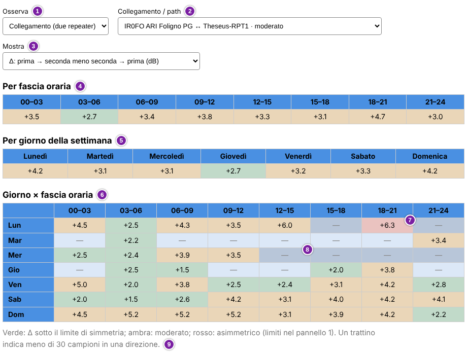
L'immagine mostra, nell'ordine indicato dai numeri:
- il selettore Osserva;
- il selettore Collegamento / path;
- il selettore Mostra, qui sulla differenza Δ;
- la tabella Per fascia oraria;
- la tabella Per giorno della settimana;
- la tabella Giorno × fascia oraria;
- una cella colorata con il suo valore, qui rossa perché Δ è asimmetrica;
- una cella con «—», cioè con meno di 30 campioni;
- la legenda sotto le tabelle.
Schermata d'esempio. Il periodo è Tutta la storia.
Per un collegamento senza campioni sufficienti in entrambe le direzioni compare «Nessun dato per giorno e ora per questa scelta».
6.16 Qualità, pannello 7: confronto tra nodi
Il pannello 7. Confronto tra nodi mostra lo stesso collegamento misurato da più di un Nodo. Una grande dispersione tra i Nodi significa che il valore dipende dalle tracce che hanno attraversato il collegamento, non solo dal collegamento stesso.
Il Collettore vede le tracce di tutti i Nodi, quindi può confrontarli.
| Collegamento | Nodo | A → B (SNR medio dB) | B → A (SNR medio dB) | Δ (dB) | Dispersione di Δ tra i nodi (dB) |
|---|---|---|---|---|---|
| Repeater 1 ↔ Repeater 2 | Nodo A | 7.5 (n=637) | 6.4 (n=637) | +1.1 | 3.2 |
| Nodo B | 4.2 (n=410) | 6.3 (n=395) | -2.1 | ||
| Repeater 3 ↔ Repeater 4 | Nodo A | 5.0 (n=120) | 4.5 (n=118) | +0.5 | — |
| Nodo B pochi | 3.1 (n=8) | 2.0 (n=40) | +1.1 |
Dati d'esempio.
La tabella ha un gruppo di righe per collegamento, con una riga per Nodo. La colonna Dispersione di Δ tra i nodi (dB) riporta la differenza tra il Δ più alto e il Δ più basso misurati dai Nodi. I gruppi con la dispersione maggiore compaiono per primi.
Il badge pochi indica che il Nodo ha meno di 30 campioni in una direzione: quel Nodo non conta nella dispersione. Se meno di due Nodi hanno campioni sufficienti, la dispersione è «—». Se nessun collegamento è misurato da più di un Nodo compare «Nessun collegamento è stato misurato da più di un nodo in questo periodo.».
7. Notifiche Telegram
Il bot Telegram del progetto, @TraceMon_bot, ha due usi.
Aiuta a collegare un nuovo Nodo al Collettore. Se lo si vuole, avvisa
anche quando un repeater o il device di un Nodo ha bisogno di attenzione.
Il servizio è gratuito e gestito dal progetto.
Solo Collettore: la pagina Notifiche Telegram e l'invio degli avvisi. La pagina spiega come iscriversi al bot, inviare la chiave SSH e attivare le notifiche. L'attivazione si fa invece sul Nodo (sezione 7.2).
7.1 Collegare un nuovo Nodo
Un nuovo Nodo si collega al Collettore con la sua chiave SSH pubblica, che si invia al bot. Si invia solo la chiave pubblica, di tipo ed25519, mai quella privata. Il bot risponde con l'impronta (fingerprint) della chiave.
L'amministratore del Collettore abilita la chiave a mano. Poi scrive
nella stessa chat il Node ID, cioè l'identificativo del Nodo sul
Collettore, e l'indirizzo del server. Il procedimento completo è in
INSTALL.md, sezione «Collegarsi al server Collector».
7.2 Attivare le notifiche
Le notifiche sono facoltative. Partono dal Collettore, quindi funzionano
solo con un Nodo già collegato. Sono messaggi in uscita verso un account
Telegram personale. Non dipendono dal canale #bot della
mesh.
Le notifiche si attivano sul Nodo, non nella dashboard. Servono il chat
ID, il numero che identifica l'account Telegram, e lo strumento
config.sh. Il bot comunica il chat ID quando si preme
Start/Avvia nella sua chat. Il procedimento è in
INSTALL.md, sezione «Notifiche Telegram (opzionale)».
Il chat ID ha effetto dopo il riavvio del servizio del Nodo (sezione 8.1). Lo propone
config.sh al termine; con risposta negativa si riavvia a
mano più tardi. Il chat ID raggiunge poi il Collettore alla
sincronizzazione successiva, in pochi minuti. Le notifiche si
disattivano con lo stesso strumento.
Più persone possono ricevere gli avvisi dello stesso Nodo. Ognuna avvia il bot dal proprio account e i chat ID si inseriscono tutti insieme, separati da virgola.
7.3 Quali avvisi arrivano
Il Collettore controlla i dati dei Nodi che hanno attivato le notifiche a intervalli che stabilisce chi lo amministra (sezione 1.4). Per ogni repeater che il Nodo interroga, invia un avviso quando si verifica una condizione della tabella. Valuta anche la connessione del device. I valori dei repeater sono quelli dell'ultima interrogazione.
| Avviso | Condizione |
|---|---|
| Temperatura alta | La temperatura del repeater raggiunge 37 °C o più. |
| Temperatura bassa | La temperatura del repeater scende a 0 °C o meno. |
| TX Duty Cycle osservato | Il valore della riga TX Duty Cycle (observed, TX/Uptime) raggiunge il 9 % (sezione 5.1). |
| Batteria | La tensione del repeater scende a 3.1 V o meno. |
| Duty Cycle configurato | Il valore della riga Duty Cycle supera il 10 % (sezione 5.3). |
| Default Region non impostata | Il repeater non ha una regione predefinita: la riga Default Region riporta un valore nullo (sezione 5.3). |
| Device disconnesso | Il companion del Nodo risulta Disconnesso (sezione 4.1). |
| Device di nuovo connesso | Il companion torna Connesso dopo un avviso di disconnessione. |
Per le condizioni dei repeater l'avviso parte una sola volta, quando la soglia viene raggiunta. Non ne arrivano altri finché il valore non rientra, con un piccolo margine, e la raggiunge di nuovo.
Lo stato Sconosciuto del device non genera avvisi. Indica solo che da più di 30 minuti non arrivano dati freschi (sezione 4.1).
Ogni messaggio riporta il nome del repeater, il valore misurato e la soglia. Se il nome del repeater non è noto, compaiono i primi 12 caratteri della sua chiave pubblica. Per il device compaiono il Node ID e, se il Nodo ha un nome, il nome.
- «⚠️ Repeater di esempio 1: batteria 3.05V (soglia 3.1V)»
- «⚠️ node_01 (Nodo di esempio): device disconnesso dalle 14:05»
- «✅ node_01 (Nodo di esempio): device di nuovo connesso»
Dati d'esempio. Se la disconnessione non è di oggi, l'orario ha anche la data, nella forma «dal 21/10 alle 14:05».
Riepilogo giornaliero: il Collettore può inviarlo una volta al giorno, se l'amministratore del Collettore lo ha pianificato. Arriva agli stessi chat ID degli avvisi, per i Nodi con le notifiche attivate, e inizia con «📋 Riepilogo giornaliero». Per ogni repeater riporta temperatura, TX Duty Cycle osservato, batteria, Duty Cycle configurato e Default Region, anche se nessun valore ha raggiunto una soglia. Un valore mancante compare come «n/a».
8. Amministrazione del Nodo
Solo Nodo: questa sezione riguarda chi gestisce un Nodo dal
terminale del suo computer. Spiega setup.sh e
config.sh, i due script che preparano e cambiano la
configurazione. Il Collettore non li ha.
La sezione dice che cosa chiede ogni script e che cosa cambia ogni voce.
I passi per installare il Nodo restano in INSTALL.md, citato
per titolo di sezione. L'elenco dei titoli è nella sezione 10.
8.1 I due strumenti
Il software del Nodo è formato da sette parti, i moduli: per
esempio quello delle tracce e quello del Sonar. Il servizio del
Nodo, trace-mon.service, è il programma che resta in
esecuzione sul computer e carica i moduli quando parte. La dashboard ha
un servizio a parte, trace-web.service.
Gli script si avviano dalla cartella principale del progetto. I comandi
sono in INSTALL.md, nelle sezioni citate in 8.2 e 8.4. Non
richiedono diritti di amministratore, salvo il riavvio del servizio che
config.sh propone alla chiusura.
| Che cosa si vuole fare | Strumento | Sezione |
|---|---|---|
| Creare gli script e la configurazione di un Nodo appena scaricato | setup.sh | 8.2 |
| Cambiare il Node ID o l'indirizzo del server del Collettore | setup.sh, rilanciato | 8.3 |
| Cambiare una qualsiasi impostazione, per esempio connessione, path, repeater, moduli, notifiche o Sonar | config.sh | 8.4 |
Allineare config.yaml a una versione nuova del software: aggiunge i parametri nuovi e toglie quelli dismessi | config.sh, voce 9) Allinea al template | 8.13 |
Si risponde alle domande scrivendo il valore e premendo invio. Un valore tra parentesi quadre, per esempio [5000], è quello predefinito o attuale: invio lo accetta. In una domanda sì/no la lettera maiuscola, come in [y/N], è la risposta data da invio. Fa eccezione un intervallo come [1-3]: indica le scelte ammesse.
8.2 setup.sh: le domande
setup.sh si esegue una volta, dopo aver scaricato il
progetto. Ha tre parti: gli script di manutenzione, il file di
configurazione e il file di servizio della dashboard. I passi sono in
INSTALL.md, sezione «Generare i file specifici della tua
installazione (setup.sh)».
Schermo d'esempio. Una prima esecuzione, con valori inventati e segnaposto tra parentesi angolari.
=== MeshCore trace-mon — Setup === --- Parte 1: script di manutenzione --- Node ID (es. node_01, node_02, node_03): node_01 IP del server Collettore: <indirizzo del Collettore> generato: backup.sh generato: contact_sync.sh generato: rotate_contacts.sh generato: trace.sh generato: cron_delay.sh --- Parte 2: config.yaml --- Tipo di connessione al companion MeshCore: 1) TCP 2) Seriale (USB) 3) BLE Scelta [1-3]: 1 Host TCP: <indirizzo del companion> Porta TCP [5000]: Path da tracciare — elenco di prefissi separati da virgola, formato: aaaa,bbbb,aaaa (es. 0001,0002,0001). Path: 0001,0002,0001 Nome del repeater da interrogare (neighbor_monitoring): <nome del repeater> generato: config/config.yaml (YAML valido) --- Parte 3: servizio systemd (trace-web.service) --- Rilevato Node.js in: <percorso di node> generato: systemd/trace-web.service === Setup completato === Per attivare i servizi: sudo cp systemd/trace-mon.service systemd/trace-web.service /etc/systemd/system/ sudo systemctl daemon-reload sudo systemctl enable --now trace-mon trace-web
Le domande compaiono in quest'ordine. Quelle che cominciano con Per TCP,
Per Seriale o Per BLE compaiono solo con quel tipo di connessione. Node ID
e indirizzo del server servono già alla prima domanda: vanno ottenuti
prima, come indica INSTALL.md, sezione «Collegarsi al server
Collector».
| Domanda | Che cosa inserire |
|---|---|
| Node ID | L'identificativo del Nodo sul Collettore. Lo comunica l'amministratore del Collettore (sezione 7.1). Sono ammessi lettere, cifre, trattino basso e trattino. |
| IP del server Collettore | L'indirizzo IPv4 del server del Collettore, comunicato insieme al Node ID. |
| Scelta | Il tipo di connessione al companion: 1 per TCP, 2 per Seriale (USB), 3 per BLE. |
| Host TCP | Per TCP: l'indirizzo del companion. È obbligatorio. |
| Porta TCP | Per TCP: invio accetta 5000. |
| Device seriale | Per Seriale: invio accetta /dev/ttyUSB0. |
| Baudrate | Per Seriale: invio accetta 115200. |
| Indirizzo BLE | Per BLE: l'indirizzo del companion, per esempio AA:BB:CC:DD:EE:FF. È obbligatorio. |
| Path | Un path da tracciare: gli hash dei repeater (sezione 2.5), in esadecimale e separati da virgola, per esempio 0001,0002,0001. Lo script li chiama prefissi. È obbligatorio. setup.sh non ne controlla il formato. |
| Nome del repeater da interrogare | Il nome di un repeater che il Nodo interroga per la scheda Repeater (sezione 5). È obbligatorio. Tra parentesi compare neighbor_monitoring: è il nome di questa impostazione in config.yaml, non quello del modulo (sezione 8.10). |
Un Node ID o un indirizzo non validi, una scelta diversa da 1, 2 e 3 o un valore obbligatorio vuoto fermano lo script. Il messaggio comincia con «ERRORE:».
Con Node ID e indirizzo, setup.sh scrive cinque script di
manutenzione, già eseguibili: backup.sh,
contact_sync.sh, rotate_contacts.sh,
trace.sh e cron_delay.sh. Li esegue il crontab
(INSTALL.md, sezione «Crontab»). Dopo la scrittura lo script
ne controlla la sintassi.
Con le altre risposte setup.sh crea config.yaml
dal modello di configurazione, il file con i valori iniziali di
ogni impostazione. Il menu di config.sh lo chiama template.
Il file config.yaml può essere letto solo dal proprietario.
Il modello contiene una chiave del canale Sonar valida, quindi il modulo
Sonar nasce attivo (sezione 8.14).
Infine setup.sh cerca Node.js sul computer e scrive
trace-web.service, il file di servizio della dashboard.
Senza Node.js lo script si ferma: si installa Node.js e lo si rilancia.
In fondo lo script mostra tre comandi sudo che copiano i file di
servizio e avviano i servizi. Li descrive INSTALL.md,
sezione «Attivare i servizi systemd».
8.3 Rilanciare setup.sh
setup.sh si può rilanciare quando serve, per esempio per
cambiare il Node ID o l'indirizzo del server. Entrambi sono scritti negli
script di manutenzione. Node ID e indirizzo vengono sempre chiesti.
Per ogni file già presente lo script chiede «Sovrascrivere? [y/N]». Con
invio il file resta com'è e quella parte viene saltata. Le domande sulla
connessione, sul path e sul repeater compaiono solo se si sovrascrive
config.yaml.
Attenzione: rispondere sì per config.yaml sostituisce
il file senza fare una copia di sicurezza. Path, repeater, regioni,
moduli attivi, notifiche Telegram e impostazioni Sonar tornano ai valori
delle nuove risposte e del modello.
Per cambiare solo Node ID e indirizzo, INSTALL.md, sezione
«Collegarsi al server Collector», indica di rispondere sì agli script di
manutenzione. Indica di rispondere no a config.yaml e a
trace-web.service.
8.4 config.sh: come funziona
config.sh cambia config.yaml senza un editor
di testo. È un menu a numeri: si scrive il numero di una voce e si
preme invio. Quasi ogni voce del menu principale apre un sottomenu, con
le sue voci. Con 0 si torna indietro o, nel menu principale, si esce.
Schermo d'esempio. Il menu principale.
=== MeshCore trace-mon — Modifica configurazione === 1) Connessione 2) Trace 3) Bot 4) Contacts 5) Repeater interrogati 6) Servizi 7) Logging 8) Telegram (notifiche al gestore del nodo) 9) Allinea al template (aggiungi parametri mancanti) 10) Sonar (canale dedicato per l'acquisizione dei path) 0) Esci Scelta:
| Voce | Che cosa cambia | Sezione |
|---|---|---|
| 1) Connessione | Il tipo di connessione al companion e i suoi dettagli. | 8.5 |
| 2) Trace | I path da tracciare, la pausa tra due path e il tempo di attesa di una traccia. | 8.6 |
| 3) Bot | Le regioni note al bot. | 8.7 |
| 4) Contacts | L'intervallo di lettura dei contatti e dello stato del device. | 8.8 |
| 5) Repeater interrogati | I repeater interrogati e il modo di interrogarli. | 8.9 |
| 6) Servizi | I moduli attivi. | 8.10 |
| 7) Logging | Il livello di dettaglio del registro. | 8.11 |
| 8) Telegram (notifiche al gestore del nodo) | Le notifiche verso il proprio account Telegram. | 8.12 |
| 9) Allinea al template (parametri mancanti e nuovi default) | I parametri nuovi del modello di configurazione e i nuovi valori predefiniti. | 8.13 |
| 10) Sonar (canale dedicato per l'acquisizione dei path) | Il canale e la trasmissione del Sonar. | 8.14 |
Ogni modifica segue gli stessi passi. config.sh copia il
file attuale, scrive il nuovo e controlla che sia valido. Se non lo è,
rimette il file com'era. Al termine mostra «config.yaml aggiornato».
Le copie stanno nella cartella config/backup, con la data
nel nome. Se ne conservano 20. I commenti scritti a mano in
config.yaml non restano nel nuovo file, ma restano nella
copia.
Un errore compare come riga che comincia con «ERRORE:» e lascia il file
com'è. Per i tempi e i tentativi config.sh rifiuta i valori
sotto il minimo e lo dice. Senza config.yaml non parte e
rimanda a setup.sh.
Uscendo dopo una modifica, config.sh chiede «Modifiche
salvate. Riavviare trace-mon.service ora? [y/N]». Rispondendo y riavvia il
servizio del Nodo. Rispondendo n ricorda il comando da dare più tardi,
sudo systemctl restart trace-mon.
Il riavvio applica tutte le modifiche. Alcune hanno effetto anche senza. Il crontab legge a ogni esecuzione i path e l'intervallo delle tracce (sezione 8.6). Legge allo stesso modo i repeater interrogati e la pausa tra l'uno e l'altro (sezione 8.9).
La sezione di INSTALL.md «Modificare la configurazione in
seguito (config.sh)» presenta lo stesso strumento.
8.5 Connessione
La voce 1) Connessione sceglie come il Nodo parla con il companion. Mostra il tipo attuale e chiede i dettagli del tipo scelto. Un valore tra parentesi quadre è quello attuale: invio lo mantiene.
| Voce | Dettagli chiesti |
|---|---|
| 1) TCP | Host TCP e Porta TCP. |
| 2) Seriale | Device seriale e Baudrate. |
| 3) BLE | Indirizzo BLE. |
| 0) Torna indietro (nessuna modifica) | Torna al menu principale senza cambiare nulla. |
La voce cambia il tipo e i dettagli di quel tipo. I dettagli degli altri due tipi restano nel file e non sono usati. La modifica ha effetto dopo il riavvio del servizio del Nodo.
8.6 Trace
La voce 2) Trace gestisce i path che il Nodo traccia (sezione 3). Un path si scrive come elenco di hash dei repeater (sezione 2.5), in esadecimale e separati da virgola, per esempio 0001,0002,0001. Per attivare o disattivare tutto il modulo delle tracce serve la voce 6) Servizi (sezione 8.10).
| Voce | Che cosa fa |
|---|---|
| 1) Elenca path configurati | Mostra i path, ognuno con la scritta abilitato o disabilitato. |
| 2) Aggiungi un path | Chiede il path e poi se abilitarlo subito. Un path già presente non viene aggiunto. |
| 3) Rimuovi un path | Chiede il solo path, senza la scritta abilitato o disabilitato. L'ultimo path rimasto non si può rimuovere. |
| 4) Attiva/disattiva un path esistente | Chiede il path e poi «Abilitarlo?»: sì lo abilita, no lo disabilita. Un path disabilitato resta nell'elenco ma non viene tracciato, per esempio mentre una tratta radio non è disponibile. |
| 5) Imposta intervallo tra un path e il successivo | I secondi di pausa tra un path e il successivo durante la stessa esecuzione. Il minimo è 10. |
| 6) Imposta timeout risposta TRACE_DATA | I secondi di attesa della risposta di una traccia. Il minimo è 10. Il valore è di riserva: si usa solo se il device non indica un tempo di attesa proprio per la traccia. |
Le voci 2, 3, 4 e 5 hanno effetto alla successiva esecuzione delle tracce. La voce 6 ha effetto dopo il riavvio del servizio del Nodo. Una traccia senza risposta nel tempo di attesa è un TIMEOUT (sezione 3.2). Ogni quanto parte l'esecuzione delle tracce non si imposta da qui: lo decide il crontab (sezione 1.4).
8.7 Bot
La voce 3) Bot gestisce le regioni note al modulo del bot, quello che risponde ai comandi ricevuti sul canale del bot della mesh. Il bot usa l'elenco per riconoscere la regione di un messaggio (sezione 5.4).
| Voce | Che cosa fa |
|---|---|
| 1) Elenca regioni note | Mostra l'elenco delle regioni. |
| 2) Aggiungi una regione | Chiede il nome della regione, per esempio europe, it o fr. |
| 3) Rimuovi una regione | Chiede il nome come compare nell'elenco. L'ultima regione rimasta non si può rimuovere. |
Il canale del bot non si cambia da questo menu. La sezione di
INSTALL.md «Canale del bot» spiega come si indica un canale
diverso da quello predefinito. Le modifiche all'elenco hanno effetto dopo
il riavvio del servizio del Nodo.
8.8 Contacts
La voce 4) Contacts apre un sottomenu con una sola voce. Imposta ogni quanto il Nodo legge per intero i contatti del device. La stessa lettura aggiorna lo stato del device (sezione 4.1).
| Voce | Che cosa fa |
|---|---|
| 1) Imposta intervallo di sync col device | I secondi tra una lettura completa e la successiva. Il minimo è 60. Il valore predefinito è 3600, cioè un'ora (sezione 1.4). |
La lettura è locale e non genera traffico radio. Un valore molto basso aumenta le scritture nel database del Nodo. La modifica ha effetto dopo il riavvio del servizio del Nodo. Non cambia ogni quanto il crontab invia i dati al Collettore (sezione 1.4).
8.9 Repeater interrogati
La voce 5) Repeater interrogati gestisce i repeater che il Nodo
interroga per la scheda Repeater (sezione 5). Il companion deve
avere il permesso admin su ognuno: INSTALL.md, sezione
«Permessi ACL sul repeater (per il servizio Repeaters)».
| Voce | Che cosa fa |
|---|---|
| 1) Aggiungi un repeater | Chiede il nome del repeater, uguale a quello con cui il repeater si annuncia, maiuscole comprese. |
| 2) Rimuovi un repeater | Chiede il nome come compare nell'elenco. L'ultimo repeater rimasto non si può rimuovere. Può far cancellare i dati del repeater: vedi l'avviso sotto. |
| 3) Rinomina un repeater | Chiede il nome attuale e il nuovo. Cambia il nome in configurazione, non i dati già raccolti. Un nome con cui il Nodo non trova il repeater ha l'effetto di una rimozione: vedi l'avviso sotto. |
| 4) Imposta tentativi per interrogazione fallita | Il numero di tentativi per ogni richiesta radio a un repeater, prima di passare oltre. Il minimo è 1: la richiesta non viene ripetuta. |
| 5) Imposta intervallo tra un repeater e il successivo | I secondi di pausa tra un repeater e il successivo, se ne sono configurati più di uno. Il minimo è 1. |
Attenzione: 2) Rimuovi un repeater cambia solo la configurazione: il repeater non viene più interrogato ma resta nella scheda Repeater. Alla successiva archiviazione mensile (sezione 1.4), se da almeno 7 giorni non ha dati nuovi, il Nodo cancella tutti i suoi dati di monitoraggio.
Prima di cancellare, il Nodo salva una copia dei dati nella propria cartella backup. La copia resta lì e nessuno strumento del progetto la rilegge. Il Nodo invia al Collettore una copia completa del proprio database: dopo il primo invio successivo anche il Collettore non ha più quei dati.
L'elenco dei repeater e la pausa hanno effetto alla successiva interrogazione. I tentativi hanno effetto dopo il riavvio del servizio del Nodo. Ogni quanto parte l'interrogazione dei repeater non si imposta da qui: lo decide il crontab (sezione 1.4).
8.10 Servizi
La voce 6) Servizi attiva o disattiva un modulo. Il menu chiama servizi i moduli e li indica con un nome, mostrato insieme alla scritta abilitato o disabilitato.
| Nome | Che cosa fa il modulo |
|---|---|
system | Risponde sullo stato della connessione con il companion. |
trace | Esegue le tracce (sezione 3). |
advert | Trasmette gli advert, anche in flood (sezione 6). |
bot | Risponde ai comandi ricevuti sul canale del bot (sezione 8.7). |
contact_sync | Legge i contatti e lo stato del device e li registra nel Nodo (sezioni 4.1 e 4.2). Non invia i dati al Collettore: lo fa uno script del crontab con lo stesso nome (sezione 1.4), che resta attivo anche se il modulo è disattivato. |
neighbor_monitor | Interroga i repeater (sezione 5). |
sonar | Riceve i messaggi Sonar e li trasmette quando il crontab lo chiede (sezione 4.4). |
| Voce | Che cosa fa |
|---|---|
| 1) Attiva un servizio | Mostra i moduli e chiede il nome di quello da attivare. |
| 2) Disattiva un servizio | Mostra i moduli e chiede il nome di quello da disattivare. |
Attenzione: un modulo disattivato non viene caricato quando il servizio del Nodo parte. Le attività del crontab che lo richiedono falliscono e l'attività del modulo si ferma finché non lo si riattiva.
Un nome non valido dà un errore. La modifica ha effetto dopo il riavvio
del servizio del Nodo. Dopo una prima installazione tutti i moduli sono
attivi: INSTALL.md, sezione «Tutti i servizi sono abilitati
di default».
8.11 Logging
La voce 7) Logging imposta quanto è dettagliato il registro del Nodo. Mostra il livello attuale. Il livello predefinito è INFO.
| Voce | Che cosa registra |
|---|---|
| 1) DEBUG | Tutti i messaggi, compresi i dettagli utili per la diagnosi. |
| 2) INFO | Il funzionamento normale, gli avvisi e gli errori. |
| 3) WARNING | Gli avvisi e gli errori. |
| 4) ERROR | Solo gli errori. |
Il livello vale per il servizio del Nodo e per gli script del crontab. Il servizio lo legge quando parte. Ogni script lo legge a ogni esecuzione.
8.12 Telegram
La voce 8) Telegram (notifiche al gestore del nodo) imposta le notifiche verso il proprio account Telegram. Non riguarda il modulo del bot della mesh (sezione 8.7). Il menu mostra lo stato, abilitate o disabilitate, e i chat ID.
| Voce | Che cosa fa |
|---|---|
| 1) Imposta il/i chat ID (uno o più, separati da virgola) | Chiede i chat ID. Per più persone si scrivono tutti, separati da virgola. |
| 2) Abilita le notifiche | Attiva l'invio delle notifiche. |
| 3) Disabilita le notifiche | Sospende l'invio delle notifiche. |
Come ottenere il chat ID, quando la modifica ha effetto e quali avvisi
arrivano sono nelle sezioni 7.2 e 7.3. I passi sono in
INSTALL.md, sezione «Notifiche Telegram (opzionale)».
8.13 Allinea al template
La voce 9) Allinea al template (parametri mancanti e nuovi default)
confronta config.yaml con il modello di configurazione.
Aggiunge i parametri mancanti, toglie quelli che il modello non contiene
più e aggiorna un parametro il cui valore predefinito è cambiato. Il nome
della voce non cita i parametri tolti, ma la voce toglie anche quelli
dismessi. Serve dopo un aggiornamento del software che ha introdotto o
tolto parametri.
| Che cosa fa | Messaggio |
|---|---|
| Aggiunge i parametri che il modello ha e il file no, con il valore del modello. | «AGGIUNTA:» |
| Porta al nuovo valore predefinito un parametro che ha ancora il vecchio. | «AGGIORNATA (vecchio default):» |
| Toglie i parametri che il modello non contiene più. | «RIMOSSA (non più nel template):» |
| Non trova differenze: non cambia nulla e non fa copie. | «config.yaml già allineato al template — nessuna modifica necessaria.» |
Un valore già presente non cambia mai. Le liste, cioè path, repeater, regioni e moduli, non vengono toccate. Le eccezioni sono due.
- La chiave del canale Sonar: se manca, o è vuota, viene copiata dal modello e non è mai mostrata.
- Il parametro
heartbeat_timeout: il suo valore predefinito è passato da 5 a 10. Se il file ha ancora 5, viene portato a 10. Un valore diverso resta com'è e viene solo segnalato.
Le modifiche hanno effetto dopo il riavvio del servizio del Nodo.
Attenzione: i parametri tolti non tornano da soli. Prima di
modificare config.yaml, config.sh ne fa una copia
in config/backup. La voce stampa un riepilogo con il totale
dei parametri aggiunti, aggiornati e tolti.
8.14 Sonar
La voce 10) Sonar (canale dedicato per l'acquisizione dei path) gestisce il canale e la trasmissione dei messaggi Sonar (sezione 4.4). Il menu mostra il canale, se la chiave è impostata, lo stato della trasmissione, l'ambito e l'intervallo minimo. In una nuova installazione ricezione e trasmissione sono già attive.
| Voce | Che cosa fa |
|---|---|
| 1) Imposta la chiave del canale (32 caratteri esadecimali) | Chiede la chiave del canale Sonar, uguale su tutti i Nodi della rete Sonar. Mentre la si scrive non è mostrata. Con un valore che non ha 32 caratteri esadecimali non cambia nulla. |
| 2) Abilita la trasmissione | Il Nodo trasmette i messaggi Sonar quando il crontab lo chiede. |
| 3) Disabilita la trasmissione | Il Nodo non trasmette più. La ricezione dipende solo dal modulo sonar (sezione 8.10). |
| 4) Imposta lo scope di trasmissione | L'ambito dei messaggi trasmessi (sezione 6.2). * o U: nessuna regione. D: la regione predefinita del companion, impostata nell'app MeshCore (INSTALL.md, sezione «Default region»). Oppure il nome di una regione, per esempio it. Il valore predefinito è D. |
| 5) Imposta l'intervallo minimo tra due invii | I secondi minimi tra due trasmissioni. Con 0 non c'è controllo. Il valore predefinito è 600. |
| 6) Verifica/crea il canale sul companion | Cerca il canale sul companion e, se manca, chiede se crearlo: crearlo aggiunge il canale al companion. Chiede poi se mostrare la chiave e se salvarla in config.yaml quando non è impostata. |
La chiave di norma arriva dal modello di configurazione, con
setup.sh o con la voce 9) Allinea al template. La voce
1 serve per impostarla o sostituirla a mano su questo Nodo.
La voce 6 richiede il servizio del Nodo in esecuzione e il modulo
sonar attivo. La chiave compare sullo schermo solo se si
risponde sì alla domanda su di essa. Come controllare nel registro che il
canale sia pronto: INSTALL.md, sezione «Attivare i servizi
systemd».
Le modifiche alle voci 1, 2, 3, 4 e 5 hanno effetto dopo il riavvio del servizio del Nodo.
9. Glossario
Il glossario raccoglie i termini usati nella guida, in ordine alfabetico. Include i termini MeshCore che la guida richiama. La terza colonna indica dove il termine è spiegato.
Solo Collettore: i termini spiegati nella sezione 6 riguardano la scheda Analisi, che c'è solo nel Collettore.
| Termine | Significato | Sezione |
|---|---|---|
| ACL | Lista di accesso di un repeater. Per interrogarlo, il companion collegato al Nodo deve avere il permesso admin. | 5 |
| Advert | Messaggio con cui un nodo annuncia la propria presenza. | 1.1, 4.2 |
| Airtime | Tempo che un repeater passa a trasmettere e a ricevere pacchetti. | 4.1, 5.1 |
| Ambiguo | Detto di un hash con cui inizia la chiave pubblica di più repeater noti. Il nome non si può stabilire. | 2.6 |
| Ambito, scope | Indica se un pacchetto in flood è senza regione (FLOOD) o con regione (TC_FLOOD). Nel riepilogo del pannello 1 la riga Ambito ha un altro significato. | 6.2, 6.3 |
| Anomalia | Nell'analisi Qualità, path con un buon margine ma poche tracce con risposta. È uno spunto da approfondire, non una diagnosi. | 6.9, 6.14 |
| Archivio | Dati di un mese concluso, consultabili in sola lettura. | 2.3 |
| Campione | Nell'analisi Qualità, un valore di SNR di una tratta letto in una traccia con risposta. Servono almeno 30 campioni per mostrare un valore. | 6.9 |
| Chat | Tipo di nodo MeshCore nell'elenco dei nodi conosciuti: un companion. | 4.2 |
| Chiave del canale | Chiave con cui si decifrano i messaggi del canale Sonar. Ha 32 caratteri esadecimali ed è uguale su tutti i Nodi della rete Sonar. | 8.14 |
| Collegamento | Nell'analisi Qualità, coppia di due repeater misurata nelle due direzioni e scritta A ↔ B. | 6.9, 6.12 |
| Collettore | Server centrale che riceve e aggrega i dati di più Nodi. | 1.2 |
| Companion | Dispositivo MeshCore con cui un Nodo riceve e trasmette. Quello collegato al Nodo è SRC. L'interfaccia lo chiama anche device. | 1.2 |
| Copia | Ogni ricezione di una trasmissione da parte di un tracciatore. Nel dettaglio di un nodo la stessa ricezione è un'osservazione. | 6.2 |
| CRC | Controllo che verifica che il contenuto di un pacchetto non sia alterato. | 4.1 |
| Crontab | Elenco delle attività che il computer esegue a orari fissi. | 1.4 |
| Device | Il companion collegato al Nodo, come lo chiama l'interfaccia. | 1.2, 4.1 |
| Diretto | Detto di un pacchetto ricevuto con 0 hop, cioè senza repeater di mezzo. Non è la modalità direct. Nell'analisi Qualità un path diretto ha un solo repeater. | 2.5, 6.9 |
| Duty Cycle | Limite di trasmissione che un repeater si impone. Dopo ogni trasmissione resta in silenzio per un tempo proporzionale. | 5.3 |
| Flood e direct | Modalità di instradamento. Un pacchetto flood è rilanciato da tutti i nodi che lo sentono. Un pacchetto direct è instradato lungo un path specifico. | 4.1 |
| FLOOD, TC_FLOOD, Unscoped | FLOOD è un pacchetto flood senza regione. Unscoped è lo stesso ambito, nei nomi delle impostazioni del repeater. TC_FLOOD è un pacchetto flood con regione: TC sta per transport code. | 5.3, 6.2 |
| Gateway | Ultimo repeater del path, accanto al tracciatore. | 6.2 |
| Hash | Inizio della chiave pubblica di un repeater, di 1, 2 o 3 byte. Indica il repeater in un path. | 2.5 |
| Hop | Repeater attraversato da un pacchetto. | 1.1, 2.5 |
| Indicazione | Stato del pannello 5: il repeater è stato visto lontano in 1 o 2 trasmissioni di advert, o da una sola sorgente. | 6.7 |
| Limite di hop | Numero massimo di hop fino al quale un repeater ritrasmette un pacchetto in flood. | 5.3, 6.8 |
| Margine | Nell'analisi Qualità, di quanto l'SNR medio della direzione più debole supera la soglia di demodulazione. | 6.9 |
| Modello di configurazione | File con i valori iniziali della configurazione. setup.sh lo usa per creare la configurazione, la voce 9 di config.sh per aggiornarla. I menu e i messaggi di config.sh lo chiamano template. | 8.2, 8.13 |
| Modulo | Ciascuna delle sette parti del software del Nodo, per esempio quella delle tracce. Il menu di config.sh la chiama servizio. | 8.1, 8.10 |
| Node ID | Identificativo del Nodo sul Collettore, comunicato dall'amministratore del Collettore. | 7.1, 8.2 |
| Nodo, nodo | Nodo, con la maiuscola, è un'installazione di trace-mon. Nodo con la minuscola è un nodo MeshCore. A inizio frase la guida scrive Nodo trace-mon o nodo MeshCore. | 1.2 |
| Noto | Un repeater è noto se compare tra i nodi conosciuti del Nodo. | 2.6, 4.2 |
| Osservazione | Nella scheda Tracce, un'esecuzione di un path. Nel dettaglio di un nodo, una ricezione dell'advert di quel nodo, che l'analisi Propagazione chiama copia. | 3, 4.3 |
| Path | Sequenza di repeater che un pacchetto attraversa. | 1.1, 2.5 |
| Periodo | Insieme di dati mostrato: il mese in corso, detto in tempo reale, oppure un mese archiviato. | 2.3 |
| Posizione | Come termine, il numero d'ordine di un repeater nel path, contato dalla sorgente. Come etichetta Posizione indica le coordinate di un nodo e, tra i tracciatori, se le coordinate sono utilizzabili. | 4.3, 6.2, 6.3 |
| Prefisso | Primi caratteri della chiave pubblica di un nodo, in esadecimale. | 4.4, 5.5 |
| Provato | Stato del pannello 5, scritto Provato ≥ 9 hop: il repeater è stato visto lontano in almeno 3 trasmissioni di advert da almeno 2 sorgenti. Descrive ciò che è stato osservato e non assegna un limite. | 6.7 |
| Regione | Ambito regionale indicato in un pacchetto flood con regione. Un repeater fa transitare i pacchetti delle regioni che supporta. | 5.4 |
| Repeater | Nodo MeshCore che ritrasmette i pacchetti degli altri nodi. | 5 |
| Repeater gestito da trace-mon | Repeater che il Nodo interroga, quelli della scheda Repeater. Solo per questi sono noti i limiti di hop. | 5, 6.2 |
| Room server | Nodo MeshCore che ospita una stanza di messaggi. | 1.2 |
| RSSI | Potenza del segnale ricevuto, in dBm. Riguarda la ricezione di un dispositivo. | 2.7 |
| Servizio del Nodo | Programma che resta in esecuzione sul computer del Nodo e carica i moduli. Si chiama trace-mon.service. La dashboard ha un servizio a parte, trace-web.service. Molte modifiche della configurazione hanno effetto dopo il riavvio del servizio del Nodo. | 7.2, 8.1 |
| Simmetria | Nell'analisi Qualità, la differenza Δ tra l'SNR medio delle due direzioni di un collegamento: simmetrico, moderato o asimmetrico. | 6.9, 6.11 |
| SNR | Rapporto tra segnale e rumore, in dB. Riguarda la ricezione di un dispositivo. | 2.7 |
| Sonar | Messaggio breve con un numero progressivo, trasmesso dai Nodi a intervalli regolari su un canale pubblico dedicato. | 1.1, 4.4 |
| Sorgente | Ruolo del nodo che ha inviato un pacchetto. Un Nodo è sorgente dei pacchetti che trasmette e tracciatore di quelli che riceve. Nelle tracce la sorgente si chiama SRC. | 1.2, 6.2 |
| Sorgente dati | Selettore della scheda Tracce: In tempo reale o un mese archiviato. Nelle altre schede si sceglie con Periodo. | 2.3, 3.1 |
| Speculare | Detto di un path in cui il ritorno ripercorre l'andata, come SRC→2559→0940→2559→SRC. Ogni collegamento è misurato nelle due direzioni dalla stessa traccia. | 6.9 |
| SRC | Il companion collegato al Nodo, dall'inglese source. Nelle tracce è la sorgente: il pacchetto parte da lì e il path torna lì. È anche il punto in cui trace-mon registra i pacchetti e il riferimento per le distanze. | 1.2, 3, 6.2 |
| TIMEOUT | Traccia che non ha ricevuto risposta entro il tempo di attesa. | 3.2 |
| Traccia | Pacchetto di prova che percorre un path all'andata e al ritorno e dà l'SNR di ogni passaggio. | 3 |
| Tracciatore | Ruolo del Nodo che registra i path dei pacchetti ricevuti dal suo companion. Lo stesso Nodo è sorgente dei pacchetti che trasmette. | 6.2 |
| Trace-Path | Nei titoli dell'interfaccia, la traccia di un path configurato. Pianificati indica tracce eseguite a intervalli regolari. | 3 |
| Trasmissione | Pacchetto inviato una volta. Può dare più copie. | 6.2 |
| Tratta | Nell'analisi Qualità, passaggio tra due elementi del path di una traccia. È ciò che la scheda Tracce chiama tratto. | 3.2, 6.9 |
10. Rimandi a INSTALL.md
INSTALL.md è il documento di installazione e configurazione
di trace-mon. Contiene i passi per installare il Nodo e collegarlo al
Collettore. La guida non li ripete.
Le sezioni di INSTALL.md sono citate per titolo, non per
numero. Il documento è scritto solo in italiano.
| Titolo della sezione | Serve per | Citata in |
|---|---|---|
| Permessi ACL sul repeater (per il servizio Repeaters) | Dare al companion il permesso admin sui repeater da interrogare. | 5, 8.9 |
| Crontab | Conoscere e cambiare le attività periodiche e le loro cadenze. | 1.4, 4.2, 8.2 |
| Collegarsi alla Dashboard locale | Aprire la dashboard di un Nodo. | 1.2 |
| Collegarsi al server Collector | Collegare un Nodo al Collettore con la chiave SSH e il bot Telegram. | 1.2, 7.1, 8.2, 8.3 |
| Modificare la configurazione in seguito (config.sh) | Cambiare la configurazione di un Nodo con il menu di config.sh: path da tracciare e repeater da interrogare. | 1.4, 3, 5, 6.2, 8.4 |
| Impostazioni contatti (per il servizio Nodes) | Impostare il companion perché aggiunga ai contatti i repeater e gli altri nodi che riceve. | 2.6 |
| Notifiche Telegram (opzionale) | Attivare gli avvisi Telegram. | 7.2, 8.12 |
| Generare i file specifici della tua installazione (setup.sh) | Creare gli script di manutenzione, la configurazione e il file di servizio della dashboard con setup.sh. | 8.2 |
| Attivare i servizi systemd | Avviare il servizio del Nodo e quello della dashboard e controllarne lo stato. | 8.2, 8.14 |
| Canale del bot | Creare il canale su cui risponde il bot e indicarlo nella configurazione se non è quello predefinito. | 8.7 |
| Tutti i servizi sono abilitati di default | Sapere quali moduli sono attivi dopo setup.sh. | 8.10 |
| Default region | Impostare nell'app MeshCore la regione predefinita del companion. | 8.14 |